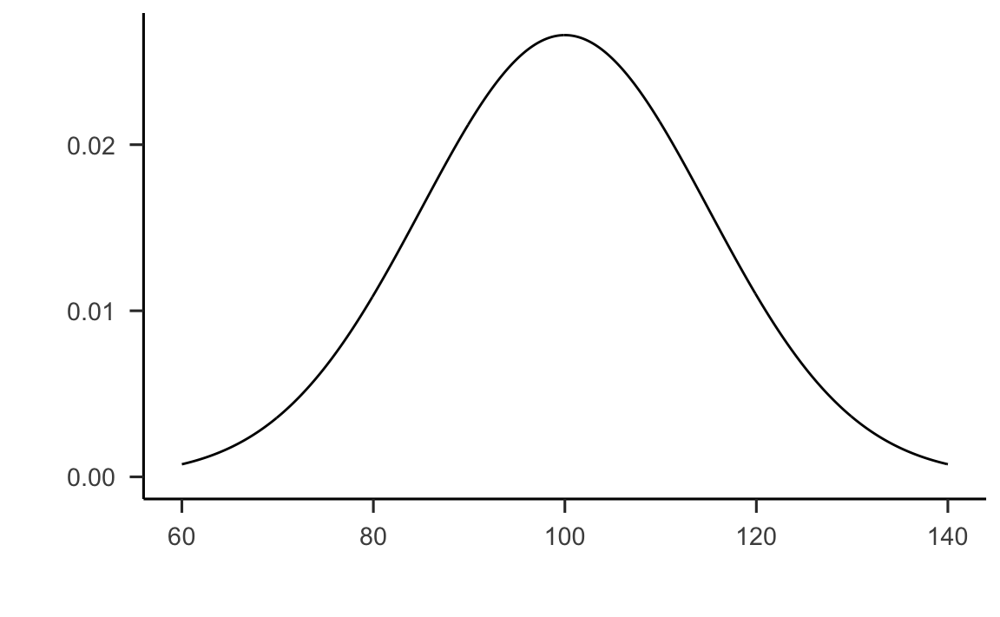
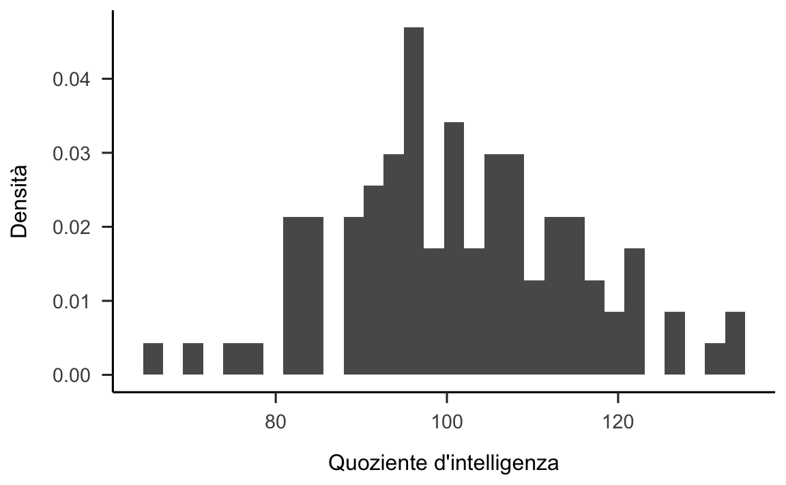
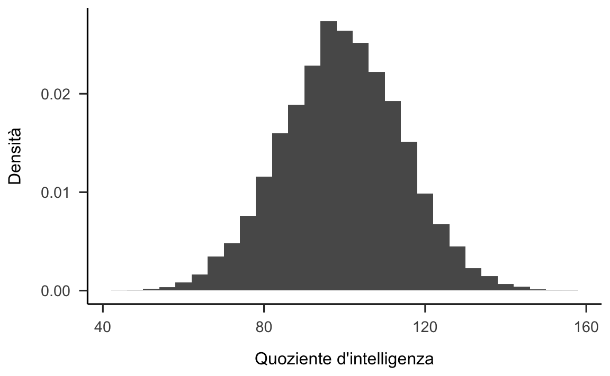
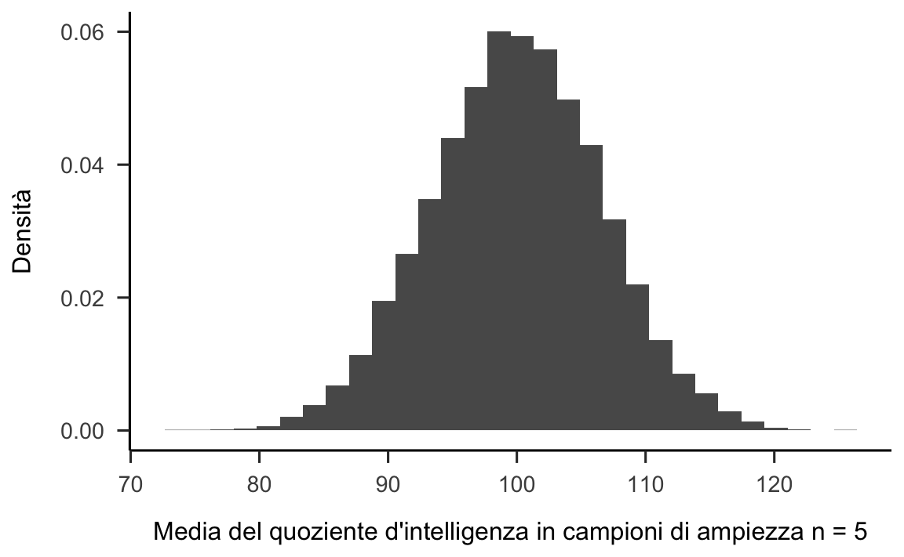
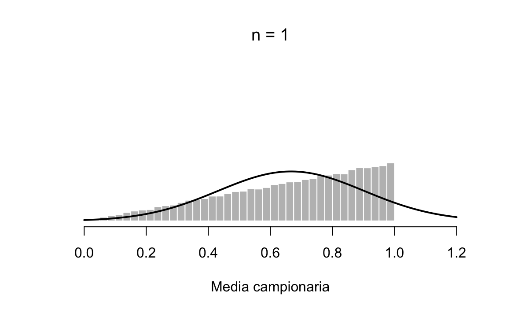
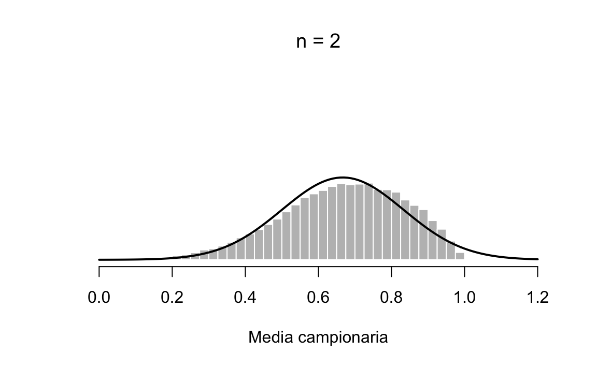
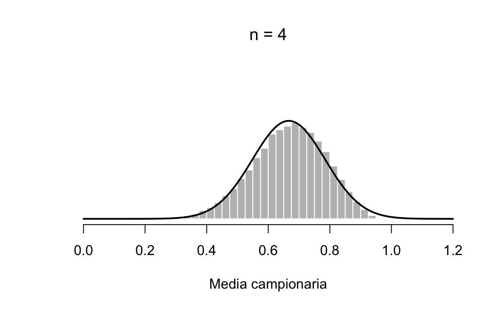
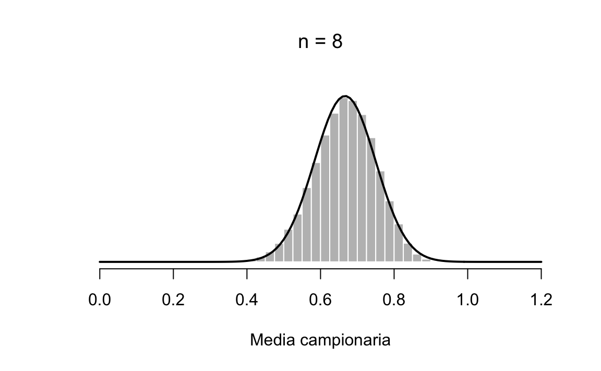

<!DOCTYPE html>
<html lang="" xml:lang="">
<head>

  <meta charset="utf-8" />
  <meta http-equiv="X-UA-Compatible" content="IE=edge" />
  <title>Capitolo 14 Distribuzione campionaria della media dei campioni | PSICOMETRIA</title>
  <meta name="description" content="Queste dispense si propongono di fornire un’introduzione all’analisi dei dati psicologici agli studenti del primo anno del Corso di Laurea in Scienze e Tecniche Psicologiche. Particolare attenzione sarà posta ai seguenti aspetti: l’uso del linguaggio R per lo svolgimento delle analisi statistiche, la rappresentazione grafica dei dati e l’inferenza Bayesiana." />
  <meta name="generator" content="bookdown 0.21.4 and GitBook 2.6.7" />

  <meta property="og:title" content="Capitolo 14 Distribuzione campionaria della media dei campioni | PSICOMETRIA" />
  <meta property="og:type" content="book" />
  
  
  <meta property="og:description" content="Queste dispense si propongono di fornire un’introduzione all’analisi dei dati psicologici agli studenti del primo anno del Corso di Laurea in Scienze e Tecniche Psicologiche. Particolare attenzione sarà posta ai seguenti aspetti: l’uso del linguaggio R per lo svolgimento delle analisi statistiche, la rappresentazione grafica dei dati e l’inferenza Bayesiana." />
  <meta name="github-repo" content="ccaudek/bookdown_psicometria" />

  <meta name="twitter:card" content="summary" />
  <meta name="twitter:title" content="Capitolo 14 Distribuzione campionaria della media dei campioni | PSICOMETRIA" />
  <meta name="twitter:site" content="@ccaudek" />
  <meta name="twitter:description" content="Queste dispense si propongono di fornire un’introduzione all’analisi dei dati psicologici agli studenti del primo anno del Corso di Laurea in Scienze e Tecniche Psicologiche. Particolare attenzione sarà posta ai seguenti aspetti: l’uso del linguaggio R per lo svolgimento delle analisi statistiche, la rappresentazione grafica dei dati e l’inferenza Bayesiana." />
  

<meta name="author" content="Corrado Caudek" />


<meta name="date" content="2021-01-10" />

  <meta name="viewport" content="width=device-width, initial-scale=1" />
  <meta name="apple-mobile-web-app-capable" content="yes" />
  <meta name="apple-mobile-web-app-status-bar-style" content="black" />
  
  <link rel="shortcut icon" href="images/favicon/favicon.ico" type="image/x-icon" />
<link rel="prev" href="chapter-distr-congiunta.html"/>
<link rel="next" href="chapter-stima-funzione-aposteriori.html"/>
<script src="libs/header-attrs-2.6.4/header-attrs.js"></script>
<script src="libs/jquery-2.2.3/jquery.min.js"></script>
<link href="libs/gitbook-2.6.7/css/style.css" rel="stylesheet" />
<link href="libs/gitbook-2.6.7/css/plugin-table.css" rel="stylesheet" />
<link href="libs/gitbook-2.6.7/css/plugin-bookdown.css" rel="stylesheet" />
<link href="libs/gitbook-2.6.7/css/plugin-highlight.css" rel="stylesheet" />
<link href="libs/gitbook-2.6.7/css/plugin-search.css" rel="stylesheet" />
<link href="libs/gitbook-2.6.7/css/plugin-fontsettings.css" rel="stylesheet" />
<link href="libs/gitbook-2.6.7/css/plugin-clipboard.css" rel="stylesheet" />


<style type="text/css">
pre > code.sourceCode { white-space: pre; position: relative; }
pre > code.sourceCode > span { display: inline-block; line-height: 1.25; }
pre > code.sourceCode > span:empty { height: 1.2em; }
code.sourceCode > span { color: inherit; text-decoration: inherit; }
pre.sourceCode { margin: 0; }
@media screen {
div.sourceCode { overflow: auto; }
}
@media print {
pre > code.sourceCode { white-space: pre-wrap; }
pre > code.sourceCode > span { text-indent: -5em; padding-left: 5em; }
}
pre.numberSource code
  { counter-reset: source-line 0; }
pre.numberSource code > span
  { position: relative; left: -4em; counter-increment: source-line; }
pre.numberSource code > span > a:first-child::before
  { content: counter(source-line);
    position: relative; left: -1em; text-align: right; vertical-align: baseline;
    border: none; display: inline-block;
    -webkit-touch-callout: none; -webkit-user-select: none;
    -khtml-user-select: none; -moz-user-select: none;
    -ms-user-select: none; user-select: none;
    padding: 0 4px; width: 4em;
    color: #aaaaaa;
  }
pre.numberSource { margin-left: 3em; border-left: 1px solid #aaaaaa;  padding-left: 4px; }
div.sourceCode
  {   }
@media screen {
pre > code.sourceCode > span > a:first-child::before { text-decoration: underline; }
}
code span.al { color: #ff0000; font-weight: bold; } /* Alert */
code span.an { color: #60a0b0; font-weight: bold; font-style: italic; } /* Annotation */
code span.at { color: #7d9029; } /* Attribute */
code span.bn { color: #40a070; } /* BaseN */
code span.bu { } /* BuiltIn */
code span.cf { color: #007020; font-weight: bold; } /* ControlFlow */
code span.ch { color: #4070a0; } /* Char */
code span.cn { color: #880000; } /* Constant */
code span.co { color: #60a0b0; font-style: italic; } /* Comment */
code span.cv { color: #60a0b0; font-weight: bold; font-style: italic; } /* CommentVar */
code span.do { color: #ba2121; font-style: italic; } /* Documentation */
code span.dt { color: #902000; } /* DataType */
code span.dv { color: #40a070; } /* DecVal */
code span.er { color: #ff0000; font-weight: bold; } /* Error */
code span.ex { } /* Extension */
code span.fl { color: #40a070; } /* Float */
code span.fu { color: #06287e; } /* Function */
code span.im { } /* Import */
code span.in { color: #60a0b0; font-weight: bold; font-style: italic; } /* Information */
code span.kw { color: #007020; font-weight: bold; } /* Keyword */
code span.op { color: #666666; } /* Operator */
code span.ot { color: #007020; } /* Other */
code span.pp { color: #bc7a00; } /* Preprocessor */
code span.sc { color: #4070a0; } /* SpecialChar */
code span.ss { color: #bb6688; } /* SpecialString */
code span.st { color: #4070a0; } /* String */
code span.va { color: #19177c; } /* Variable */
code span.vs { color: #4070a0; } /* VerbatimString */
code span.wa { color: #60a0b0; font-weight: bold; font-style: italic; } /* Warning */
</style>

<link rel="stylesheet" href="style.css" type="text/css" />
</head>

<body>


  <div class="book without-animation with-summary font-size-2 font-family-1" data-basepath=".">

    <div class="book-summary">
      <nav role="navigation">

<ul class="summary">
<li><a href="./">A.A. 2020/2021</a></li>

<li class="divider"></li>
<li class="chapter" data-level="" data-path="index.html"><a href="index.html"><i class="fa fa-check"></i>Prefazione</a></li>
<li class="part"><span><b>Introduzione</b></span></li>
<li class="chapter" data-level="" data-path="obiettivi.html"><a href="obiettivi.html"><i class="fa fa-check"></i>Obiettivi</a></li>
<li class="chapter" data-level="" data-path="perché-tanta-statistica-in-psicologia.html"><a href="perché-tanta-statistica-in-psicologia.html"><i class="fa fa-check"></i>Perché tanta statistica in psicologia?</a></li>
<li class="chapter" data-level="" data-path="come-studiare.html"><a href="come-studiare.html"><i class="fa fa-check"></i>Come studiare?</a></li>
<li class="part"><span><b>Introduzione al linguaggio R</b></span></li>
<li class="chapter" data-level="1" data-path="chapter-pacchetti.html"><a href="chapter-pacchetti.html"><i class="fa fa-check"></i><b>1</b> Pacchetti</a></li>
<li class="chapter" data-level="2" data-path="cha-install.html"><a href="cha-install.html"><i class="fa fa-check"></i><b>2</b> Per cominciare</a>
<ul>
<li class="chapter" data-level="" data-path="cha-install.html"><a href="cha-install.html#obiettivi-di-apprendimento"><i class="fa fa-check"></i>Obiettivi di apprendimento</a></li>
<li class="chapter" data-level="" data-path="cha-install.html"><a href="cha-install.html#motivazione"><i class="fa fa-check"></i>Motivazione</a></li>
<li class="chapter" data-level="2.1" data-path="cha-install.html"><a href="cha-install.html#installare-r-e-rstudio"><i class="fa fa-check"></i><b>2.1</b> Installare R e RStudio</a></li>
<li class="chapter" data-level="2.2" data-path="cha-install.html"><a href="cha-install.html#utilizzare-rstudio-per-semplificare-il-lavoro"><i class="fa fa-check"></i><b>2.2</b> Utilizzare RStudio per semplificare il lavoro</a>
<ul>
<li class="chapter" data-level="2.2.1" data-path="cha-install.html"><a href="cha-install.html#eseguire-il-codice"><i class="fa fa-check"></i><b>2.2.1</b> Eseguire il codice</a></li>
</ul></li>
</ul></li>
<li class="chapter" data-level="3" data-path="chapter-sintassi-R.html"><a href="chapter-sintassi-R.html"><i class="fa fa-check"></i><b>3</b> Sintassi di base</a>
<ul>
<li class="chapter" data-level="" data-path="cha-install.html"><a href="cha-install.html#obiettivi-di-apprendimento"><i class="fa fa-check"></i>Obiettivi di apprendimento</a></li>
<li class="chapter" data-level="" data-path="cha-install.html"><a href="cha-install.html#motivazione"><i class="fa fa-check"></i>Motivazione</a></li>
<li class="chapter" data-level="3.1" data-path="chapter-sintassi-R.html"><a href="chapter-sintassi-R.html#utilizzare-la-console-r-come-calcolatrice"><i class="fa fa-check"></i><b>3.1</b> Utilizzare la console R come calcolatrice</a></li>
<li class="chapter" data-level="3.2" data-path="chapter-sintassi-R.html"><a href="chapter-sintassi-R.html#le-parentesi"><i class="fa fa-check"></i><b>3.2</b> Le parentesi</a></li>
<li class="chapter" data-level="3.3" data-path="chapter-sintassi-R.html"><a href="chapter-sintassi-R.html#i-nomi-degli-oggetti"><i class="fa fa-check"></i><b>3.3</b> I nomi degli oggetti</a></li>
<li class="chapter" data-level="3.4" data-path="chapter-sintassi-R.html"><a href="chapter-sintassi-R.html#permanenza-dei-dati-e-rimozione-di-oggetti"><i class="fa fa-check"></i><b>3.4</b> Permanenza dei dati e rimozione di oggetti</a></li>
<li class="chapter" data-level="3.5" data-path="chapter-sintassi-R.html"><a href="chapter-sintassi-R.html#chiudere-r"><i class="fa fa-check"></i><b>3.5</b> Chiudere R</a></li>
<li class="chapter" data-level="3.6" data-path="chapter-sintassi-R.html"><a href="chapter-sintassi-R.html#sec:editor"><i class="fa fa-check"></i><b>3.6</b> Creare ed eseguire uno script R con un editore</a>
<ul>
<li class="chapter" data-level="3.6.1" data-path="chapter-sintassi-R.html"><a href="chapter-sintassi-R.html#commentare-il-codice"><i class="fa fa-check"></i><b>3.6.1</b> Commentare il codice</a></li>
</ul></li>
<li class="chapter" data-level="3.7" data-path="chapter-sintassi-R.html"><a href="chapter-sintassi-R.html#sec:change_dir"><i class="fa fa-check"></i><b>3.7</b> Cambiare la cartella di lavoro</a></li>
<li class="chapter" data-level="3.8" data-path="chapter-sintassi-R.html"><a href="chapter-sintassi-R.html#loggetto-base-di-il-vettore"><i class="fa fa-check"></i><b>3.8</b> L’oggetto base di : il vettore</a>
<ul>
<li class="chapter" data-level="3.8.1" data-path="chapter-sintassi-R.html"><a href="chapter-sintassi-R.html#operazioni-vettorializzate"><i class="fa fa-check"></i><b>3.8.1</b> Operazioni vettorializzate</a></li>
<li class="chapter" data-level="3.8.2" data-path="chapter-sintassi-R.html"><a href="chapter-sintassi-R.html#vettori-aritmetici"><i class="fa fa-check"></i><b>3.8.2</b> Vettori aritmetici</a></li>
<li class="chapter" data-level="3.8.3" data-path="chapter-sintassi-R.html"><a href="chapter-sintassi-R.html#generazione-di-sequenze-regolari"><i class="fa fa-check"></i><b>3.8.3</b> Generazione di sequenze regolari</a></li>
<li class="chapter" data-level="3.8.4" data-path="chapter-sintassi-R.html"><a href="chapter-sintassi-R.html#sec:gen_rand_numbers"><i class="fa fa-check"></i><b>3.8.4</b> Generazione di numeri casuali</a></li>
<li class="chapter" data-level="3.8.5" data-path="chapter-sintassi-R.html"><a href="chapter-sintassi-R.html#vettori-logici"><i class="fa fa-check"></i><b>3.8.5</b> Vettori logici</a></li>
<li class="chapter" data-level="3.8.6" data-path="chapter-sintassi-R.html"><a href="chapter-sintassi-R.html#dati-mancanti"><i class="fa fa-check"></i><b>3.8.6</b> Dati mancanti</a></li>
<li class="chapter" data-level="3.8.7" data-path="chapter-sintassi-R.html"><a href="chapter-sintassi-R.html#vettori-di-caratteri-e-fattori"><i class="fa fa-check"></i><b>3.8.7</b> Vettori di caratteri e fattori</a></li>
</ul></li>
<li class="chapter" data-level="3.9" data-path="chapter-sintassi-R.html"><a href="chapter-sintassi-R.html#cap:sintassi_funzioni"><i class="fa fa-check"></i><b>3.9</b> Funzioni</a>
<ul>
<li class="chapter" data-level="3.9.1" data-path="chapter-sintassi-R.html"><a href="chapter-sintassi-R.html#scrivere-proprie-funzioni"><i class="fa fa-check"></i><b>3.9.1</b> Scrivere proprie funzioni</a></li>
</ul></li>
<li class="chapter" data-level="3.10" data-path="chapter-sintassi-R.html"><a href="chapter-sintassi-R.html#pacchetti"><i class="fa fa-check"></i><b>3.10</b> Pacchetti</a>
<ul>
<li class="chapter" data-level="3.10.1" data-path="chapter-sintassi-R.html"><a href="chapter-sintassi-R.html#istallazione-e-upgrade-dei-pacchetti"><i class="fa fa-check"></i><b>3.10.1</b> Istallazione e upgrade dei pacchetti</a></li>
<li class="chapter" data-level="3.10.2" data-path="chapter-sintassi-R.html"><a href="chapter-sintassi-R.html#caricare-un-pacchetto-in-r"><i class="fa fa-check"></i><b>3.10.2</b> Caricare un pacchetto in R</a></li>
</ul></li>
</ul></li>
<li class="chapter" data-level="4" data-path="chapter-strutture-dati-R.html"><a href="chapter-strutture-dati-R.html"><i class="fa fa-check"></i><b>4</b> Strutture di dati</a>
<ul>
<li class="chapter" data-level="" data-path="cha-install.html"><a href="cha-install.html#obiettivi-di-apprendimento"><i class="fa fa-check"></i>Obiettivi di apprendimento</a></li>
<li class="chapter" data-level="" data-path="cha-install.html"><a href="cha-install.html#motivazione"><i class="fa fa-check"></i>Motivazione</a></li>
<li class="chapter" data-level="4.1" data-path="chapter-strutture-dati-R.html"><a href="chapter-strutture-dati-R.html#classi-e-modi-degli-oggetti"><i class="fa fa-check"></i><b>4.1</b> Classi e modi degli oggetti</a>
<ul>
<li class="chapter" data-level="4.1.1" data-path="chapter-strutture-dati-R.html"><a href="chapter-strutture-dati-R.html#vettori"><i class="fa fa-check"></i><b>4.1.1</b> Vettori</a></li>
</ul></li>
<li class="chapter" data-level="4.2" data-path="chapter-strutture-dati-R.html"><a href="chapter-strutture-dati-R.html#matrici"><i class="fa fa-check"></i><b>4.2</b> Matrici</a></li>
<li class="chapter" data-level="4.3" data-path="chapter-strutture-dati-R.html"><a href="chapter-strutture-dati-R.html#array"><i class="fa fa-check"></i><b>4.3</b> Array</a></li>
<li class="chapter" data-level="4.4" data-path="chapter-strutture-dati-R.html"><a href="chapter-strutture-dati-R.html#operazioni-aritmetiche-su-vettori-matrici-e-array"><i class="fa fa-check"></i><b>4.4</b> Operazioni aritmetiche su vettori, matrici e array</a>
<ul>
<li class="chapter" data-level="4.4.1" data-path="chapter-strutture-dati-R.html"><a href="chapter-strutture-dati-R.html#operazioni-aritmetiche-su-vettori"><i class="fa fa-check"></i><b>4.4.1</b> Operazioni aritmetiche su vettori</a></li>
<li class="chapter" data-level="4.4.2" data-path="chapter-strutture-dati-R.html"><a href="chapter-strutture-dati-R.html#operazioni-aritmetiche-su-matrici"><i class="fa fa-check"></i><b>4.4.2</b> Operazioni aritmetiche su matrici</a></li>
<li class="chapter" data-level="4.4.3" data-path="chapter-strutture-dati-R.html"><a href="chapter-strutture-dati-R.html#operazioni-aritmetiche-su-array"><i class="fa fa-check"></i><b>4.4.3</b> Operazioni aritmetiche su array</a></li>
</ul></li>
<li class="chapter" data-level="4.5" data-path="chapter-strutture-dati-R.html"><a href="chapter-strutture-dati-R.html#liste"><i class="fa fa-check"></i><b>4.5</b> Liste</a></li>
<li class="chapter" data-level="4.6" data-path="chapter-strutture-dati-R.html"><a href="chapter-strutture-dati-R.html#data-frame"><i class="fa fa-check"></i><b>4.6</b> Data frame</a>
<ul>
<li class="chapter" data-level="4.6.1" data-path="chapter-strutture-dati-R.html"><a href="chapter-strutture-dati-R.html#selezione-di-elementi"><i class="fa fa-check"></i><b>4.6.1</b> Selezione di elementi</a></li>
<li class="chapter" data-level="4.6.2" data-path="chapter-strutture-dati-R.html"><a href="chapter-strutture-dati-R.html#giochi-di-carte"><i class="fa fa-check"></i><b>4.6.2</b> Giochi di carte</a></li>
<li class="chapter" data-level="4.6.3" data-path="chapter-strutture-dati-R.html"><a href="chapter-strutture-dati-R.html#variabili-locali"><i class="fa fa-check"></i><b>4.6.3</b> Variabili locali</a></li>
</ul></li>
</ul></li>
<li class="chapter" data-level="5" data-path="chapter-strutture-controllo.html"><a href="chapter-strutture-controllo.html"><i class="fa fa-check"></i><b>5</b> Strutture di controllo</a>
<ul>
<li class="chapter" data-level="" data-path="cha-install.html"><a href="cha-install.html#obiettivi-di-apprendimento"><i class="fa fa-check"></i>Obiettivi di apprendimento</a></li>
<li class="chapter" data-level="" data-path="cha-install.html"><a href="cha-install.html#motivazione"><i class="fa fa-check"></i>Motivazione</a></li>
<li class="chapter" data-level="5.1" data-path="chapter-strutture-controllo.html"><a href="chapter-strutture-controllo.html#il-ciclo-for"><i class="fa fa-check"></i><b>5.1</b> Il ciclo <code>for</code></a></li>
</ul></li>
<li class="chapter" data-level="6" data-path="chapter-input-output-R.html"><a href="chapter-input-output-R.html"><i class="fa fa-check"></i><b>6</b> Input/Output</a>
<ul>
<li class="chapter" data-level="" data-path="cha-install.html"><a href="cha-install.html#obiettivi-di-apprendimento"><i class="fa fa-check"></i>Obiettivi di apprendimento</a></li>
<li class="chapter" data-level="" data-path="cha-install.html"><a href="cha-install.html#motivazione"><i class="fa fa-check"></i>Motivazione</a></li>
<li class="chapter" data-level="6.1" data-path="chapter-input-output-R.html"><a href="chapter-input-output-R.html#la-funzione-read.table"><i class="fa fa-check"></i><b>6.1</b> La funzione <code>read.table()</code></a></li>
<li class="chapter" data-level="6.2" data-path="chapter-input-output-R.html"><a href="chapter-input-output-R.html#file-di-dati-forniti-da-r"><i class="fa fa-check"></i><b>6.2</b> File di dati forniti da R</a></li>
<li class="chapter" data-level="6.3" data-path="chapter-input-output-R.html"><a href="chapter-input-output-R.html#esportazione-di-un-file"><i class="fa fa-check"></i><b>6.3</b> Esportazione di un file</a></li>
<li class="chapter" data-level="6.4" data-path="chapter-input-output-R.html"><a href="chapter-input-output-R.html#pacchetto-rio"><i class="fa fa-check"></i><b>6.4</b> Pacchetto <code>rio</code></a></li>
<li class="chapter" data-level="6.5" data-path="chapter-input-output-R.html"><a href="chapter-input-output-R.html#dove-sono-i-miei-file"><i class="fa fa-check"></i><b>6.5</b> Dove sono i miei file?</a></li>
</ul></li>
<li class="part"><span><b>Misurazione</b></span></li>
<li class="chapter" data-level="7" data-path="chapter-terminologia.html"><a href="chapter-terminologia.html"><i class="fa fa-check"></i><b>7</b> Terminologia</a>
<ul>
<li class="chapter" data-level="7.1" data-path="chapter-terminologia.html"><a href="chapter-terminologia.html#metodi-e-procedure-della-psicologia"><i class="fa fa-check"></i><b>7.1</b> Metodi e procedure della psicologia</a></li>
<li class="chapter" data-level="7.2" data-path="chapter-terminologia.html"><a href="chapter-terminologia.html#variabili-e-costanti"><i class="fa fa-check"></i><b>7.2</b> Variabili e costanti</a></li>
<li class="chapter" data-level="7.3" data-path="chapter-terminologia.html"><a href="chapter-terminologia.html#variabili-indipendenti-e-variabili-dipendenti"><i class="fa fa-check"></i><b>7.3</b> Variabili indipendenti e variabili dipendenti</a></li>
<li class="chapter" data-level="7.4" data-path="chapter-terminologia.html"><a href="chapter-terminologia.html#la-matrice-dei-dati"><i class="fa fa-check"></i><b>7.4</b> La matrice dei dati</a></li>
</ul></li>
<li class="chapter" data-level="8" data-path="chapter-misurazione.html"><a href="chapter-misurazione.html"><i class="fa fa-check"></i><b>8</b> La misurazione in psicologia</a>
<ul>
<li class="chapter" data-level="8.1" data-path="chapter-misurazione.html"><a href="chapter-misurazione.html#le-scale-di-misura"><i class="fa fa-check"></i><b>8.1</b> Le scale di misura</a>
<ul>
<li class="chapter" data-level="8.1.1" data-path="chapter-misurazione.html"><a href="chapter-misurazione.html#scala-nominale"><i class="fa fa-check"></i><b>8.1.1</b> Scala nominale</a></li>
<li class="chapter" data-level="8.1.2" data-path="chapter-misurazione.html"><a href="chapter-misurazione.html#scala-ordinale"><i class="fa fa-check"></i><b>8.1.2</b> Scala ordinale</a></li>
<li class="chapter" data-level="8.1.3" data-path="chapter-misurazione.html"><a href="chapter-misurazione.html#scala-ad-intervalli"><i class="fa fa-check"></i><b>8.1.3</b> Scala ad intervalli</a></li>
<li class="chapter" data-level="8.1.4" data-path="chapter-misurazione.html"><a href="chapter-misurazione.html#scala-di-rapporti"><i class="fa fa-check"></i><b>8.1.4</b> Scala di rapporti</a></li>
<li class="chapter" data-level="8.1.5" data-path="chapter-misurazione.html"><a href="chapter-misurazione.html#gerarchia-dei-livelli-di-scala-di-misura"><i class="fa fa-check"></i><b>8.1.5</b> Gerarchia dei livelli di scala di misura</a></li>
</ul></li>
<li class="chapter" data-level="8.2" data-path="chapter-misurazione.html"><a href="chapter-misurazione.html#sec:DiscreteVsContinuous"><i class="fa fa-check"></i><b>8.2</b> Variabili discrete vs. variabili continue</a></li>
<li class="chapter" data-level="8.3" data-path="chapter-misurazione.html"><a href="chapter-misurazione.html#perché-alcune-misurazioni-sono-migliori-di-altre"><i class="fa fa-check"></i><b>8.3</b> Perché alcune misurazioni sono migliori di altre?</a>
<ul>
<li class="chapter" data-level="8.3.1" data-path="chapter-misurazione.html"><a href="chapter-misurazione.html#sec:accuratezza_precisione"><i class="fa fa-check"></i><b>8.3.1</b> Tipologie di errori</a></li>
<li class="chapter" data-level="8.3.2" data-path="chapter-misurazione.html"><a href="chapter-misurazione.html#sec:reliability"><i class="fa fa-check"></i><b>8.3.2</b> Attendibilità</a></li>
<li class="chapter" data-level="8.3.3" data-path="chapter-misurazione.html"><a href="chapter-misurazione.html#sec:validity"><i class="fa fa-check"></i><b>8.3.3</b> Validità</a></li>
</ul></li>
<li class="chapter" data-level="" data-path="chapter-misurazione.html"><a href="chapter-misurazione.html#conclusioni"><i class="fa fa-check"></i>Conclusioni</a></li>
</ul></li>
<li class="part"><span><b>Descrizione</b></span></li>
<li class="chapter" data-level="9" data-path="chapter-descriptive-stats.html"><a href="chapter-descriptive-stats.html"><i class="fa fa-check"></i><b>9</b> Statistica descrittiva</a>
<ul>
<li class="chapter" data-level="9.1" data-path="chapter-descriptive-stats.html"><a href="chapter-descriptive-stats.html#perché-riassumere-i-dati"><i class="fa fa-check"></i><b>9.1</b> Perché riassumere i dati?</a></li>
<li class="chapter" data-level="9.2" data-path="chapter-descriptive-stats.html"><a href="chapter-descriptive-stats.html#sec:distr_freq"><i class="fa fa-check"></i><b>9.2</b> Distribuzioni di frequenze</a>
<ul>
<li class="chapter" data-level="9.2.1" data-path="chapter-descriptive-stats.html"><a href="chapter-descriptive-stats.html#esercizio-con-r"><i class="fa fa-check"></i><b>9.2.1</b> Esercizio con R</a></li>
</ul></li>
<li class="chapter" data-level="9.3" data-path="chapter-descriptive-stats.html"><a href="chapter-descriptive-stats.html#istogramma"><i class="fa fa-check"></i><b>9.3</b> Istogramma</a>
<ul>
<li class="chapter" data-level="9.3.1" data-path="chapter-descriptive-stats.html"><a href="chapter-descriptive-stats.html#esercizio-con-r-1"><i class="fa fa-check"></i><b>9.3.1</b> Esercizio con R</a></li>
</ul></li>
<li class="chapter" data-level="9.4" data-path="chapter-descriptive-stats.html"><a href="chapter-descriptive-stats.html#funzione-di-densità-empirica"><i class="fa fa-check"></i><b>9.4</b> Funzione di densità empirica</a>
<ul>
<li class="chapter" data-level="9.4.1" data-path="chapter-descriptive-stats.html"><a href="chapter-descriptive-stats.html#esercizio-con-r-2"><i class="fa fa-check"></i><b>9.4.1</b> Esercizio con R</a></li>
</ul></li>
<li class="chapter" data-level="9.5" data-path="chapter-descriptive-stats.html"><a href="chapter-descriptive-stats.html#forma-di-una-distribuzione"><i class="fa fa-check"></i><b>9.5</b> Forma di una distribuzione</a></li>
<li class="chapter" data-level="9.6" data-path="chapter-descriptive-stats.html"><a href="chapter-descriptive-stats.html#indici-di-posizione"><i class="fa fa-check"></i><b>9.6</b> Indici di posizione</a>
<ul>
<li class="chapter" data-level="9.6.1" data-path="chapter-descriptive-stats.html"><a href="chapter-descriptive-stats.html#quantili"><i class="fa fa-check"></i><b>9.6.1</b> Quantili</a></li>
<li class="chapter" data-level="9.6.2" data-path="chapter-descriptive-stats.html"><a href="chapter-descriptive-stats.html#box-plot"><i class="fa fa-check"></i><b>9.6.2</b> Box-plot</a></li>
<li class="chapter" data-level="9.6.3" data-path="chapter-descriptive-stats.html"><a href="chapter-descriptive-stats.html#leccellenza-grafica"><i class="fa fa-check"></i><b>9.6.3</b> L’eccellenza grafica</a></li>
</ul></li>
<li class="chapter" data-level="9.7" data-path="chapter-descriptive-stats.html"><a href="chapter-descriptive-stats.html#indici-di-tendenza-centrale"><i class="fa fa-check"></i><b>9.7</b> Indici di tendenza centrale</a>
<ul>
<li class="chapter" data-level="9.7.1" data-path="chapter-descriptive-stats.html"><a href="chapter-descriptive-stats.html#media"><i class="fa fa-check"></i><b>9.7.1</b> Media</a></li>
<li class="chapter" data-level="9.7.2" data-path="chapter-descriptive-stats.html"><a href="chapter-descriptive-stats.html#media-spuntata"><i class="fa fa-check"></i><b>9.7.2</b> Media spuntata</a></li>
<li class="chapter" data-level="9.7.3" data-path="chapter-descriptive-stats.html"><a href="chapter-descriptive-stats.html#moda-e-mediana"><i class="fa fa-check"></i><b>9.7.3</b> Moda e mediana</a></li>
</ul></li>
<li class="chapter" data-level="9.8" data-path="chapter-descriptive-stats.html"><a href="chapter-descriptive-stats.html#indici-di-dispersione"><i class="fa fa-check"></i><b>9.8</b> Indici di dispersione</a>
<ul>
<li class="chapter" data-level="9.8.1" data-path="chapter-descriptive-stats.html"><a href="chapter-descriptive-stats.html#indici-basati-sullordinamento-dei-dati"><i class="fa fa-check"></i><b>9.8.1</b> Indici basati sull’ordinamento dei dati</a></li>
<li class="chapter" data-level="9.8.2" data-path="chapter-descriptive-stats.html"><a href="chapter-descriptive-stats.html#scostamento-medio-semplice-dalla-media"><i class="fa fa-check"></i><b>9.8.2</b> Scostamento medio semplice dalla media</a></li>
<li class="chapter" data-level="9.8.3" data-path="chapter-descriptive-stats.html"><a href="chapter-descriptive-stats.html#varianza"><i class="fa fa-check"></i><b>9.8.3</b> Varianza</a></li>
<li class="chapter" data-level="9.8.4" data-path="chapter-descriptive-stats.html"><a href="chapter-descriptive-stats.html#deviazione-standard"><i class="fa fa-check"></i><b>9.8.4</b> Deviazione standard</a></li>
<li class="chapter" data-level="9.8.5" data-path="chapter-descriptive-stats.html"><a href="chapter-descriptive-stats.html#indici-di-variabilità-relativi"><i class="fa fa-check"></i><b>9.8.5</b> Indici di variabilità relativi</a></li>
</ul></li>
<li class="chapter" data-level="9.9" data-path="chapter-descriptive-stats.html"><a href="chapter-descriptive-stats.html#le-relazioni-tra-variabili"><i class="fa fa-check"></i><b>9.9</b> Le relazioni tra variabili</a>
<ul>
<li class="chapter" data-level="9.9.1" data-path="chapter-descriptive-stats.html"><a href="chapter-descriptive-stats.html#diagramma-a-dispersione"><i class="fa fa-check"></i><b>9.9.1</b> Diagramma a dispersione</a></li>
<li class="chapter" data-level="9.9.2" data-path="chapter-descriptive-stats.html"><a href="chapter-descriptive-stats.html#covarianza"><i class="fa fa-check"></i><b>9.9.2</b> Covarianza</a></li>
<li class="chapter" data-level="9.9.3" data-path="chapter-descriptive-stats.html"><a href="chapter-descriptive-stats.html#correlazione"><i class="fa fa-check"></i><b>9.9.3</b> Correlazione</a></li>
</ul></li>
<li class="chapter" data-level="9.10" data-path="chapter-descriptive-stats.html"><a href="chapter-descriptive-stats.html#correlazione-e-causazione"><i class="fa fa-check"></i><b>9.10</b> Correlazione e causazione</a>
<ul>
<li class="chapter" data-level="9.10.1" data-path="chapter-descriptive-stats.html"><a href="chapter-descriptive-stats.html#usi-della-correlazione"><i class="fa fa-check"></i><b>9.10.1</b> Usi della correlazione</a></li>
<li class="chapter" data-level="9.10.2" data-path="chapter-descriptive-stats.html"><a href="chapter-descriptive-stats.html#correlazione-di-spearman"><i class="fa fa-check"></i><b>9.10.2</b> Correlazione di Spearman</a></li>
<li class="chapter" data-level="9.10.3" data-path="chapter-descriptive-stats.html"><a href="chapter-descriptive-stats.html#correlazione-nulla"><i class="fa fa-check"></i><b>9.10.3</b> Correlazione nulla</a></li>
</ul></li>
<li class="chapter" data-level="" data-path="chapter-misurazione.html"><a href="chapter-misurazione.html#conclusioni"><i class="fa fa-check"></i>Conclusioni</a></li>
<li class="chapter" data-level="9.11" data-path="chapter-descriptive-stats.html"><a href="chapter-descriptive-stats.html#esercizi1"><i class="fa fa-check"></i><b>9.11</b> Esercizi</a></li>
</ul></li>
<li class="part"><span><b>Elementi di teoria della probabilità</b></span></li>
<li class="chapter" data-level="10" data-path="chapter-prob-discreta.html"><a href="chapter-prob-discreta.html"><i class="fa fa-check"></i><b>10</b> Che cos’è la probabilità?</a>
<ul>
<li class="chapter" data-level="10.1" data-path="chapter-prob-discreta.html"><a href="chapter-prob-discreta.html#probabilità-nel-linguaggio-naturale"><i class="fa fa-check"></i><b>10.1</b> Probabilità nel linguaggio naturale</a></li>
<li class="chapter" data-level="10.2" data-path="chapter-prob-discreta.html"><a href="chapter-prob-discreta.html#probabilità-nel-linguaggio-scientifico"><i class="fa fa-check"></i><b>10.2</b> Probabilità nel linguaggio scientifico</a></li>
<li class="chapter" data-level="10.3" data-path="chapter-prob-discreta.html"><a href="chapter-prob-discreta.html#terminologia"><i class="fa fa-check"></i><b>10.3</b> Terminologia</a></li>
<li class="chapter" data-level="10.4" data-path="chapter-prob-discreta.html"><a href="chapter-prob-discreta.html#le-diverse-definizioni-della-probabilità"><i class="fa fa-check"></i><b>10.4</b> Le diverse definizioni della probabilità</a>
<ul>
<li class="chapter" data-level="10.4.1" data-path="chapter-prob-discreta.html"><a href="chapter-prob-discreta.html#sec:def_ing_prob"><i class="fa fa-check"></i><b>10.4.1</b> Una definizione “ingenua” della probabilità</a></li>
<li class="chapter" data-level="10.4.2" data-path="chapter-prob-discreta.html"><a href="chapter-prob-discreta.html#una-definizione-non-ingenua-della-probabilità"><i class="fa fa-check"></i><b>10.4.2</b> Una definizione “non ingenua” della probabilità</a></li>
</ul></li>
<li class="chapter" data-level="10.5" data-path="chapter-prob-discreta.html"><a href="chapter-prob-discreta.html#assegnare-le-probabilità-agli-eventi"><i class="fa fa-check"></i><b>10.5</b> Assegnare le probabilità agli eventi</a>
<ul>
<li class="chapter" data-level="10.5.1" data-path="chapter-prob-discreta.html"><a href="chapter-prob-discreta.html#approccio-frequentista"><i class="fa fa-check"></i><b>10.5.1</b> Approccio frequentista</a></li>
<li class="chapter" data-level="10.5.2" data-path="chapter-prob-discreta.html"><a href="chapter-prob-discreta.html#approccio-bayesiano"><i class="fa fa-check"></i><b>10.5.2</b> Approccio Bayesiano</a></li>
</ul></li>
<li class="chapter" data-level="10.6" data-path="chapter-prob-discreta.html"><a href="chapter-prob-discreta.html#proprietà-elementari-della-probabilità"><i class="fa fa-check"></i><b>10.6</b> Proprietà elementari della probabilità</a></li>
<li class="chapter" data-level="10.7" data-path="chapter-prob-discreta.html"><a href="chapter-prob-discreta.html#variabili-aleatorie"><i class="fa fa-check"></i><b>10.7</b> Variabili aleatorie</a>
<ul>
<li class="chapter" data-level="10.7.1" data-path="chapter-prob-discreta.html"><a href="chapter-prob-discreta.html#a-cosa-servono-le-variabili-aleatorie"><i class="fa fa-check"></i><b>10.7.1</b> A cosa servono le variabili aleatorie?</a></li>
<li class="chapter" data-level="10.7.2" data-path="chapter-prob-discreta.html"><a href="chapter-prob-discreta.html#funzione-di-massa-di-probabilità"><i class="fa fa-check"></i><b>10.7.2</b> Funzione di massa di probabilità</a></li>
</ul></li>
<li class="chapter" data-level="10.8" data-path="chapter-prob-discreta.html"><a href="chapter-prob-discreta.html#notazione"><i class="fa fa-check"></i><b>10.8</b> Notazione</a></li>
<li class="chapter" data-level="" data-path="chapter-misurazione.html"><a href="chapter-misurazione.html#conclusioni"><i class="fa fa-check"></i>Conclusioni</a></li>
</ul></li>
<li class="chapter" data-level="11" data-path="chapter-prob-cond.html"><a href="chapter-prob-cond.html"><i class="fa fa-check"></i><b>11</b> Probabilità condizionata</a>
<ul>
<li class="chapter" data-level="11.1" data-path="chapter-prob-cond.html"><a href="chapter-prob-cond.html#sec:prob_cond"><i class="fa fa-check"></i><b>11.1</b> Probabilità condizionata su altri eventi</a>
<ul>
<li class="chapter" data-level="11.1.1" data-path="chapter-prob-cond.html"><a href="chapter-prob-cond.html#la-fallacia-del-pubblico-ministero"><i class="fa fa-check"></i><b>11.1.1</b> La fallacia del pubblico ministero</a></li>
</ul></li>
<li class="chapter" data-level="11.2" data-path="chapter-prob-cond.html"><a href="chapter-prob-cond.html#legge-della-probabilità-composta"><i class="fa fa-check"></i><b>11.2</b> Legge della probabilità composta</a></li>
<li class="chapter" data-level="11.3" data-path="chapter-prob-cond.html"><a href="chapter-prob-cond.html#lindipendendenza-stocastica"><i class="fa fa-check"></i><b>11.3</b> L’indipendendenza stocastica</a></li>
<li class="chapter" data-level="" data-path="chapter-misurazione.html"><a href="chapter-misurazione.html#conclusioni"><i class="fa fa-check"></i>Conclusioni</a></li>
</ul></li>
<li class="chapter" data-level="12" data-path="chapter-bayes-theo.html"><a href="chapter-bayes-theo.html"><i class="fa fa-check"></i><b>12</b> Il teorema di Bayes</a>
<ul>
<li class="chapter" data-level="12.1" data-path="chapter-bayes-theo.html"><a href="chapter-bayes-theo.html#sec:tot_prob_theorem"><i class="fa fa-check"></i><b>12.1</b> Il teorema della probabilità totale</a></li>
<li class="chapter" data-level="12.2" data-path="chapter-bayes-theo.html"><a href="chapter-bayes-theo.html#sec:bayes_theorem"><i class="fa fa-check"></i><b>12.2</b> Il teorema della probabilità delle cause</a>
<ul>
<li class="chapter" data-level="12.2.1" data-path="chapter-bayes-theo.html"><a href="chapter-bayes-theo.html#aggiornamento-bayesiano"><i class="fa fa-check"></i><b>12.2.1</b> Aggiornamento Bayesiano</a></li>
</ul></li>
<li class="chapter" data-level="" data-path="chapter-misurazione.html"><a href="chapter-misurazione.html#conclusioni"><i class="fa fa-check"></i>Conclusioni</a></li>
</ul></li>
<li class="chapter" data-level="13" data-path="chapter-distr-congiunta.html"><a href="chapter-distr-congiunta.html"><i class="fa fa-check"></i><b>13</b> Probabilità congiunta</a>
<ul>
<li class="chapter" data-level="13.1" data-path="chapter-distr-congiunta.html"><a href="chapter-distr-congiunta.html#funzione-di-probabilità-congiunta"><i class="fa fa-check"></i><b>13.1</b> Funzione di probabilità congiunta</a>
<ul>
<li class="chapter" data-level="13.1.1" data-path="chapter-distr-congiunta.html"><a href="chapter-distr-congiunta.html#proprietà"><i class="fa fa-check"></i><b>13.1.1</b> Proprietà</a></li>
<li class="chapter" data-level="13.1.2" data-path="chapter-distr-congiunta.html"><a href="chapter-distr-congiunta.html#eventi"><i class="fa fa-check"></i><b>13.1.2</b> Eventi</a></li>
<li class="chapter" data-level="13.1.3" data-path="chapter-distr-congiunta.html"><a href="chapter-distr-congiunta.html#funzioni-di-probabilità-marginali"><i class="fa fa-check"></i><b>13.1.3</b> Funzioni di probabilità marginali</a></li>
<li class="chapter" data-level="13.1.4" data-path="chapter-distr-congiunta.html"><a href="chapter-distr-congiunta.html#indipendenza-stocastica"><i class="fa fa-check"></i><b>13.1.4</b> Indipendenza stocastica</a></li>
</ul></li>
<li class="chapter" data-level="" data-path="chapter-misurazione.html"><a href="chapter-misurazione.html#conclusioni"><i class="fa fa-check"></i>Conclusioni</a></li>
</ul></li>
<li class="chapter" data-level="14" data-path="chapter-distrcampmean.html"><a href="chapter-distrcampmean.html"><i class="fa fa-check"></i><b>14</b> Distribuzione campionaria della media dei campioni</a>
<ul>
<li class="chapter" data-level="14.1" data-path="chapter-distrcampmean.html"><a href="chapter-distrcampmean.html#sec:pars_and_sample_stats"><i class="fa fa-check"></i><b>14.1</b> Parametri e statistiche</a></li>
<li class="chapter" data-level="14.2" data-path="chapter-distrcampmean.html"><a href="chapter-distrcampmean.html#la-legge-dei-grandi-numeri"><i class="fa fa-check"></i><b>14.2</b> La legge dei grandi numeri</a></li>
<li class="chapter" data-level="14.3" data-path="chapter-distrcampmean.html"><a href="chapter-distrcampmean.html#distribuzione-campionaria"><i class="fa fa-check"></i><b>14.3</b> Distribuzione campionaria</a>
<ul>
<li class="chapter" data-level="14.3.1" data-path="chapter-distrcampmean.html"><a href="chapter-distrcampmean.html#simulazione"><i class="fa fa-check"></i><b>14.3.1</b> Simulazione</a></li>
</ul></li>
<li class="chapter" data-level="14.4" data-path="chapter-distrcampmean.html"><a href="chapter-distrcampmean.html#distribuzione-campionaria-della-media"><i class="fa fa-check"></i><b>14.4</b> Distribuzione campionaria della media</a>
<ul>
<li class="chapter" data-level="14.4.1" data-path="chapter-distrcampmean.html"><a href="chapter-distrcampmean.html#valore-atteso-della-media-campionaria"><i class="fa fa-check"></i><b>14.4.1</b> Valore atteso della media campionaria</a></li>
<li class="chapter" data-level="14.4.2" data-path="chapter-distrcampmean.html"><a href="chapter-distrcampmean.html#varianza-della-media-campionaria"><i class="fa fa-check"></i><b>14.4.2</b> Varianza della media campionaria</a></li>
<li class="chapter" data-level="14.4.3" data-path="chapter-distrcampmean.html"><a href="chapter-distrcampmean.html#errore-standard"><i class="fa fa-check"></i><b>14.4.3</b> Errore standard</a></li>
<li class="chapter" data-level="14.4.4" data-path="chapter-distrcampmean.html"><a href="chapter-distrcampmean.html#distribuzioni-delle-statistiche-campionarie"><i class="fa fa-check"></i><b>14.4.4</b> Distribuzioni delle statistiche campionarie</a></li>
</ul></li>
<li class="chapter" data-level="14.5" data-path="chapter-distrcampmean.html"><a href="chapter-distrcampmean.html#sec:tlc"><i class="fa fa-check"></i><b>14.5</b> Teorema del limite centrale</a></li>
<li class="chapter" data-level="14.6" data-path="chapter-distrcampmean.html"><a href="chapter-distrcampmean.html#intervalli-di-confidenza"><i class="fa fa-check"></i><b>14.6</b> Intervalli di confidenza</a>
<ul>
<li class="chapter" data-level="14.6.1" data-path="chapter-distrcampmean.html"><a href="chapter-distrcampmean.html#parametri-di-un-modello-statistico"><i class="fa fa-check"></i><b>14.6.1</b> Parametri di un modello statistico</a></li>
<li class="chapter" data-level="14.6.2" data-path="chapter-distrcampmean.html"><a href="chapter-distrcampmean.html#lincertezza-della-stima"><i class="fa fa-check"></i><b>14.6.2</b> L’incertezza della stima</a></li>
</ul></li>
<li class="chapter" data-level="" data-path="chapter-misurazione.html"><a href="chapter-misurazione.html#conclusioni"><i class="fa fa-check"></i>Conclusioni</a></li>
</ul></li>
<li class="chapter" data-level="15" data-path="chapter-stima-funzione-aposteriori.html"><a href="chapter-stima-funzione-aposteriori.html"><i class="fa fa-check"></i><b>15</b> Stima della funzione a posteriori</a>
<ul>
<li class="chapter" data-level="15.1" data-path="chapter-stima-funzione-aposteriori.html"><a href="chapter-stima-funzione-aposteriori.html#sec:met_numerici_convenzionali"><i class="fa fa-check"></i><b>15.1</b> Metodi numerici convenzionali</a>
<ul>
<li class="chapter" data-level="15.1.1" data-path="chapter-stima-funzione-aposteriori.html"><a href="chapter-stima-funzione-aposteriori.html#sec:appross_numerica"><i class="fa fa-check"></i><b>15.1.1</b> La procedura dell’approssimazione numerica</a></li>
<li class="chapter" data-level="15.1.2" data-path="chapter-stima-funzione-aposteriori.html"><a href="chapter-stima-funzione-aposteriori.html#sec:es_pratico_zetsche"><i class="fa fa-check"></i><b>15.1.2</b> Un esempio pratico</a></li>
<li class="chapter" data-level="15.1.3" data-path="chapter-stima-funzione-aposteriori.html"><a href="chapter-stima-funzione-aposteriori.html#sec:aspett_future_beta2_10"><i class="fa fa-check"></i><b>15.1.3</b> Un esempio pratico (versione 2)</a></li>
<li class="chapter" data-level="15.1.4" data-path="chapter-stima-funzione-aposteriori.html"><a href="chapter-stima-funzione-aposteriori.html#sommario-della-funzione-a-posteriori"><i class="fa fa-check"></i><b>15.1.4</b> Sommario della funzione a posteriori</a></li>
</ul></li>
<li class="chapter" data-level="15.2" data-path="chapter-stima-funzione-aposteriori.html"><a href="chapter-stima-funzione-aposteriori.html#approssimazione-quadratica"><i class="fa fa-check"></i><b>15.2</b> Approssimazione quadratica</a></li>
<li class="chapter" data-level="15.3" data-path="chapter-stima-funzione-aposteriori.html"><a href="chapter-stima-funzione-aposteriori.html#sec:integr_MC"><i class="fa fa-check"></i><b>15.3</b> Integrazione con metodo Monte Carlo</a>
<ul>
<li class="chapter" data-level="15.3.1" data-path="chapter-stima-funzione-aposteriori.html"><a href="chapter-stima-funzione-aposteriori.html#sec:legge_forte_grandi_numeri"><i class="fa fa-check"></i><b>15.3.1</b> Legge forte dei grandi numeri</a></li>
</ul></li>
<li class="chapter" data-level="15.4" data-path="chapter-stima-funzione-aposteriori.html"><a href="chapter-stima-funzione-aposteriori.html#sec:mmmc"><i class="fa fa-check"></i><b>15.4</b> Metodi MC basati su Catena di Markov</a>
<ul>
<li class="chapter" data-level="15.4.1" data-path="chapter-stima-funzione-aposteriori.html"><a href="chapter-stima-funzione-aposteriori.html#sec:turista_viagg"><i class="fa fa-check"></i><b>15.4.1</b> Il problema del turista viaggiatore</a></li>
<li class="chapter" data-level="15.4.2" data-path="chapter-stima-funzione-aposteriori.html"><a href="chapter-stima-funzione-aposteriori.html#lalgoritmo-di-metropolis"><i class="fa fa-check"></i><b>15.4.2</b> L’algoritmo di Metropolis</a></li>
<li class="chapter" data-level="15.4.3" data-path="chapter-stima-funzione-aposteriori.html"><a href="chapter-stima-funzione-aposteriori.html#sec:metropolis_one_mean"><i class="fa fa-check"></i><b>15.4.3</b> Una applicazione concreta</a></li>
</ul></li>
<li class="chapter" data-level="" data-path="chapter-stima-funzione-aposteriori.html"><a href="chapter-stima-funzione-aposteriori.html#sec:pregi_inferenza_bayes"><i class="fa fa-check"></i>Conclusioni</a></li>
</ul></li>
<li class="chapter" data-level="16" data-path="chapter-reglin.html"><a href="chapter-reglin.html"><i class="fa fa-check"></i><b>16</b> Regressione lineare semplice</a>
<ul>
<li class="chapter" data-level="" data-path="cha-install.html"><a href="cha-install.html#obiettivi-di-apprendimento"><i class="fa fa-check"></i>Obiettivi di apprendimento</a></li>
<li class="chapter" data-level="" data-path="cha-install.html"><a href="cha-install.html#motivazione"><i class="fa fa-check"></i>Motivazione</a></li>
<li class="chapter" data-level="16.1" data-path="chapter-reglin.html"><a href="chapter-reglin.html#la-funzione-lineare"><i class="fa fa-check"></i><b>16.1</b> La funzione lineare</a></li>
<li class="chapter" data-level="16.2" data-path="chapter-reglin.html"><a href="chapter-reglin.html#lerrore-di-misurazione"><i class="fa fa-check"></i><b>16.2</b> L’errore di misurazione</a></li>
<li class="chapter" data-level="16.3" data-path="chapter-reglin.html"><a href="chapter-reglin.html#scopi-della-regressione-lineare"><i class="fa fa-check"></i><b>16.3</b> Scopi della regressione lineare</a></li>
<li class="chapter" data-level="16.4" data-path="chapter-reglin.html"><a href="chapter-reglin.html#quantificare-lassociazione-fra-due-caratteri-quantitativi"><i class="fa fa-check"></i><b>16.4</b> Quantificare l’associazione fra due caratteri quantitativi</a></li>
<li class="chapter" data-level="16.5" data-path="chapter-reglin.html"><a href="chapter-reglin.html#stime-dei-minimi-quadrati"><i class="fa fa-check"></i><b>16.5</b> Stime dei minimi quadrati</a>
<ul>
<li class="chapter" data-level="16.5.1" data-path="chapter-reglin.html"><a href="chapter-reglin.html#monotwinsiq"><i class="fa fa-check"></i><b>16.5.1</b> Un esempio concreto</a></li>
<li class="chapter" data-level="16.5.2" data-path="chapter-reglin.html"><a href="chapter-reglin.html#sec:beta_r"><i class="fa fa-check"></i><b>16.5.2</b> Coefficiente angolare e correlazione di Pearson</a></li>
<li class="chapter" data-level="16.5.3" data-path="chapter-reglin.html"><a href="chapter-reglin.html#regressione-verso-la-media"><i class="fa fa-check"></i><b>16.5.3</b> Regressione verso la media</a></li>
<li class="chapter" data-level="16.5.4" data-path="chapter-reglin.html"><a href="chapter-reglin.html#punti-influenti-e-valori-anomali"><i class="fa fa-check"></i><b>16.5.4</b> Punti influenti e valori anomali</a></li>
</ul></li>
<li class="chapter" data-level="16.6" data-path="chapter-reglin.html"><a href="chapter-reglin.html#bontà-delladattamento"><i class="fa fa-check"></i><b>16.6</b> Bontà dell’adattamento</a>
<ul>
<li class="chapter" data-level="16.6.1" data-path="chapter-reglin.html"><a href="chapter-reglin.html#errore-standard-della-stima"><i class="fa fa-check"></i><b>16.6.1</b> Errore standard della stima</a></li>
<li class="chapter" data-level="16.6.2" data-path="chapter-reglin.html"><a href="chapter-reglin.html#indice-di-determinazione"><i class="fa fa-check"></i><b>16.6.2</b> Indice di determinazione</a></li>
</ul></li>
<li class="chapter" data-level="16.7" data-path="chapter-reglin.html"><a href="chapter-reglin.html#inferenza-sullassociazione-tra-x-e-y-nella-popolazione"><i class="fa fa-check"></i><b>16.7</b> Inferenza sull’associazione tra <span class="math inline">\(x\)</span> e <span class="math inline">\(y\)</span> nella popolazione</a>
<ul>
<li class="chapter" data-level="16.7.1" data-path="chapter-reglin.html"><a href="chapter-reglin.html#modello-statistico-di-regressione-lineare"><i class="fa fa-check"></i><b>16.7.1</b> Modello statistico di regressione lineare</a></li>
<li class="chapter" data-level="16.7.2" data-path="chapter-reglin.html"><a href="chapter-reglin.html#proprietà-degli-stimatori-dei-minimi-quadrati"><i class="fa fa-check"></i><b>16.7.2</b> Proprietà degli stimatori dei minimi quadrati</a></li>
<li class="chapter" data-level="16.7.3" data-path="chapter-reglin.html"><a href="chapter-reglin.html#le-inferenze-sul-modello-di-regressione"><i class="fa fa-check"></i><b>16.7.3</b> Le inferenze sul modello di regressione</a></li>
</ul></li>
<li class="chapter" data-level="" data-path="chapter-reglin.html"><a href="chapter-reglin.html#considerazioni-conclusive"><i class="fa fa-check"></i>Considerazioni conclusive</a></li>
</ul></li>
<li class="chapter" data-level="17" data-path="chapter-stat-models.html"><a href="chapter-stat-models.html"><i class="fa fa-check"></i><b>17</b> Il modello lineare</a>
<ul>
<li class="chapter" data-level="17.1" data-path="chapter-stat-models.html"><a href="chapter-stat-models.html#modello-binomiale"><i class="fa fa-check"></i><b>17.1</b> Modello Binomiale</a></li>
<li class="chapter" data-level="17.2" data-path="chapter-stat-models.html"><a href="chapter-stat-models.html#sec:idrossi"><i class="fa fa-check"></i><b>17.2</b> Il presidente Trump e l’idrossiclorochina</a></li>
<li class="chapter" data-level="17.3" data-path="chapter-stat-models.html"><a href="chapter-stat-models.html#modello-normale"><i class="fa fa-check"></i><b>17.3</b> Modello Normale</a>
<ul>
<li class="chapter" data-level="17.3.1" data-path="chapter-stat-models.html"><a href="chapter-stat-models.html#il-modello-normale-con-quap"><i class="fa fa-check"></i><b>17.3.1</b> Il modello normale con <code>quap()</code></a></li>
</ul></li>
<li class="chapter" data-level="17.4" data-path="chapter-stat-models.html"><a href="chapter-stat-models.html#sec_mod_lin"><i class="fa fa-check"></i><b>17.4</b> Il modello di regressione lineare</a>
<ul>
<li class="chapter" data-level="17.4.1" data-path="chapter-stat-models.html"><a href="chapter-stat-models.html#sec_var_ind_dico"><i class="fa fa-check"></i><b>17.4.1</b> Variabile indipendente dicotomica</a></li>
<li class="chapter" data-level="17.4.2" data-path="chapter-stat-models.html"><a href="chapter-stat-models.html#sec_var_ind_dico"><i class="fa fa-check"></i><b>17.4.2</b> Un esempio pratico</a></li>
</ul></li>
<li class="chapter" data-level="17.5" data-path="chapter-stat-models.html"><a href="chapter-stat-models.html#sec_var_ind_dico"><i class="fa fa-check"></i><b>17.5</b> Una variabile indipendente continua</a></li>
<li class="chapter" data-level="" data-path="chapter-misurazione.html"><a href="chapter-misurazione.html#conclusioni"><i class="fa fa-check"></i>Conclusioni</a></li>
</ul></li>
<li class="chapter" data-level="" data-path="appendici.html"><a href="appendici.html"><i class="fa fa-check"></i>Appendici</a>
<ul>
<li class="chapter" data-level="" data-path="appendici.html"><a href="appendici.html#simbologia-di-base"><i class="fa fa-check"></i>Simbologia di base</a></li>
<li class="chapter" data-level="" data-path="appendici.html"><a href="appendici.html#numeri-binari-interi-razionali-irrazionali-e-reali"><i class="fa fa-check"></i>Numeri binari, interi, razionali, irrazionali e reali</a>
<ul>
<li class="chapter" data-level="" data-path="appendici.html"><a href="appendici.html#numeri-binari"><i class="fa fa-check"></i>Numeri binari</a></li>
<li class="chapter" data-level="" data-path="appendici.html"><a href="appendici.html#numeri-interi"><i class="fa fa-check"></i>Numeri interi</a></li>
<li class="chapter" data-level="" data-path="appendici.html"><a href="appendici.html#numeri-razionali"><i class="fa fa-check"></i>Numeri razionali</a></li>
<li class="chapter" data-level="" data-path="appendici.html"><a href="appendici.html#numeri-irrazionali"><i class="fa fa-check"></i>Numeri irrazionali</a></li>
<li class="chapter" data-level="" data-path="appendici.html"><a href="appendici.html#numeri-reali"><i class="fa fa-check"></i>Numeri reali</a></li>
</ul></li>
<li class="chapter" data-level="" data-path="appendici.html"><a href="appendici.html#intervalli"><i class="fa fa-check"></i>Intervalli</a></li>
<li class="chapter" data-level="" data-path="appendici.html"><a href="appendici.html#cap:insiemi"><i class="fa fa-check"></i>Insiemi</a>
<ul>
<li class="chapter" data-level="" data-path="appendici.html"><a href="appendici.html#operazioni-tra-insiemi"><i class="fa fa-check"></i>Operazioni tra insiemi</a></li>
<li class="chapter" data-level="" data-path="appendici.html"><a href="appendici.html#diagrammi-di-eulero-venn"><i class="fa fa-check"></i>Diagrammi di Eulero-Venn</a></li>
<li class="chapter" data-level="" data-path="appendici.html"><a href="appendici.html#sec:prod_cartesiano"><i class="fa fa-check"></i>Coppie ordinate e prodotto cartesiano</a></li>
<li class="chapter" data-level="" data-path="appendici.html"><a href="appendici.html#cardinalità"><i class="fa fa-check"></i>Cardinalità</a></li>
</ul></li>
<li class="chapter" data-level="" data-path="appendici.html"><a href="appendici.html#propr_coef_min_quad"><i class="fa fa-check"></i>Proprietà degli stimatori dei minimi quadrati</a></li>
</ul></li>
<li class="chapter" data-level="" data-path="bibliografia.html"><a href="bibliografia.html"><i class="fa fa-check"></i>Bibliografia</a></li>
<li class="divider"></li>
<li><a href="https://github.com/rstudio/bookdown" target="blank">Published with bookdown</a></li>

</ul>

      </nav>
    </div>

    <div class="book-body">
      <div class="body-inner">
        <div class="book-header" role="navigation">
          <h1>
            <i class="fa fa-circle-o-notch fa-spin"></i><a href="./">PSICOMETRIA</a>
          </h1>
        </div>

        <div class="page-wrapper" tabindex="-1" role="main">
          <div class="page-inner">

            <section class="normal" id="section-">
<div id="chapter:distrcampmean" class="section level1" number="14">
<h1><span class="header-section-number">Capitolo 14</span> Distribuzione campionaria della media dei campioni</h1>
<p>L’inferenza statistica può essere descritta come un insieme di operazioni sui dati che producono delle stime e delle affermazioni sul grado di incertezza che il ricercatore attribuisce alle sue previsioni e ai parametri di processi e/o popolazioni. L’obiettivo di questo capitolo è quello di fornire un’introduzione alle basi teoriche della stima e dell’interpretazione che può essere fornita alle inferenze statistiche.</p>
<div id="sec:pars_and_sample_stats" class="section level2" number="14.1">
<h2><span class="header-section-number">14.1</span> Parametri e statistiche</h2>
<p>In statistica, per <em>popolazione</em> si intende un insieme di elementi che
presenta caratteristiche aleatorie, mentre per <em>campione</em> si intende un
sottoinsieme della popolazione. Ma a cosa corrisponde in pratica la
popolazione? Per uno psicologo la popolazione è un gruppo di individui.
Per un biologo marino la popolazione è un gruppo di delfini, ad esempio.
Nella maggior parte dei casi, le popolazioni oggetto di interesse per i
ricercatori sono insiemi di entità concrete che esistono nel mondo
reale. Dal punto di vista della statistica, invece, le popolazioni sono
delle entità astratte. Infatti, gli statistici operazionalizzano il
concetto di “popolazione” nei termini di un oggetto matematico che
consente di essere manipolato con facilità. In precedenza noi abbiamo
già incontrato questi oggetti matematici: sono le distribuzioni di
probabilità.</p>
<p>L’idea è semplice. Supponiamo di occuparci del quoziente di
intelligenza, QI. Abbiamo detto che, per uno psicologo, la popolazione
di interesse solitamente è un gruppo di individui, ciascuno dei quali è
dotato di uno specifico punteggio del QI. Uno statistico “semplifica”
tale situazione definendo in maniera operativa la popolazione come la
distribuzione di densità rappresentata nella
figura <a href="chapter-distrcampmean.html#fig:qidensity">14.1</a>. In precedenza abbiamo visto infatti
come una distribuzione di densità non sia altro che la descrizione
matematica della “forma” di un istogramma che rappresenta un numero
molto alto di osservazioni.</p>
<div class="sourceCode" id="cb117"><pre class="sourceCode r"><code class="sourceCode r"><span id="cb117-1"><a href="chapter-distrcampmean.html#cb117-1" aria-hidden="true" tabindex="-1"></a><span class="fu">library</span>(<span class="st">&quot;ggfortify&quot;</span>)</span>
<span id="cb117-2"><a href="chapter-distrcampmean.html#cb117-2" aria-hidden="true" tabindex="-1"></a><span class="fu">ggdistribution</span>(dnorm, <span class="fu">seq</span>(<span class="dv">60</span>, <span class="dv">140</span>, <span class="fl">0.1</span>), <span class="at">mean =</span> <span class="dv">100</span>, <span class="at">sd =</span> <span class="dv">15</span>) <span class="sc">+</span></span>
<span id="cb117-3"><a href="chapter-distrcampmean.html#cb117-3" aria-hidden="true" tabindex="-1"></a>  <span class="fu">labs</span>(</span>
<span id="cb117-4"><a href="chapter-distrcampmean.html#cb117-4" aria-hidden="true" tabindex="-1"></a>    <span class="at">x =</span> <span class="st">&quot;Quoziente d&#39;intelligenza&quot;</span>,</span>
<span id="cb117-5"><a href="chapter-distrcampmean.html#cb117-5" aria-hidden="true" tabindex="-1"></a>    <span class="at">y =</span> <span class="st">&quot;Densità di probabilità&quot;</span></span>
<span id="cb117-6"><a href="chapter-distrcampmean.html#cb117-6" aria-hidden="true" tabindex="-1"></a>  )</span></code></pre></div>
<div class="figure" style="text-align: center"><span id="fig:qidensity"></span>

<p class="caption">
Figura 14.1: Grafico della distribuzione dei punteggi del QI nella popolazione.
</p>
</div>
<p>I test di intelligenza sono progettati in modo che il QI medio sia pari
a 100, la deviazione standard dei punteggi QI sia uguale a 15 e la
distribuzione dei punteggi del QI sia normale. I valori riportati sopra
sono detti <em>parametri</em> in quanto descrivono le proprietà dell’intera
popolazione. Cioè, diciamo che la media della popolazione è <span class="math inline">\(\mu = 100\)</span>
e la deviazione standard della popolazione è <span class="math inline">\(\sigma = 15\)</span>. Dal punto di
vista statistico, dunque, possiamo rappresentare questa ipotetica
popolazione di valori del QI mediante l’oggetto matematico che
corrisponde a una particolare distribuzione Normale:</p>
<p><span class="math display">\[
QI \sim \mathcal{N}(\mu = 100, \sigma = 15).
\]</span>
Supponiamo ora di eseguire un esperimento nel quale il test di
intelligenza viene somministrato a 100 persone selezionate a caso. Tale
campione casuale semplice consiste nel seguente insieme di 100 numeri:</p>
<div class="sourceCode" id="cb118"><pre class="sourceCode r"><code class="sourceCode r"><span id="cb118-1"><a href="chapter-distrcampmean.html#cb118-1" aria-hidden="true" tabindex="-1"></a><span class="fu">set.seed</span>(<span class="dv">123</span>)</span>
<span id="cb118-2"><a href="chapter-distrcampmean.html#cb118-2" aria-hidden="true" tabindex="-1"></a>iq1 <span class="ot">&lt;-</span> <span class="fu">rnorm</span>(<span class="dv">100</span>, <span class="dv">100</span>, <span class="dv">15</span>)</span>
<span id="cb118-3"><a href="chapter-distrcampmean.html#cb118-3" aria-hidden="true" tabindex="-1"></a><span class="co"># i valori QI sono numeri interi!</span></span>
<span id="cb118-4"><a href="chapter-distrcampmean.html#cb118-4" aria-hidden="true" tabindex="-1"></a>iq1 <span class="ot">&lt;-</span> <span class="fu">round</span>(iq1) </span>
<span id="cb118-5"><a href="chapter-distrcampmean.html#cb118-5" aria-hidden="true" tabindex="-1"></a>iq1</span>
<span id="cb118-6"><a href="chapter-distrcampmean.html#cb118-6" aria-hidden="true" tabindex="-1"></a><span class="co">#&gt;   [1]  92  97 123 101 102 126 107  81  90  93 118 105 106 102  92 127 107  71 111  93  84</span></span>
<span id="cb118-7"><a href="chapter-distrcampmean.html#cb118-7" aria-hidden="true" tabindex="-1"></a><span class="co">#&gt;  [22]  97  85  89  91  75 113 102  83 119 106  96 113 113 112 110 108  99  95  94  90  97</span></span>
<span id="cb118-8"><a href="chapter-distrcampmean.html#cb118-8" aria-hidden="true" tabindex="-1"></a><span class="co">#&gt;  [43]  81 133 118  83  94  93 112  99 104 100  99 121  97 123  77 109 102 103 106  92  95</span></span>
<span id="cb118-9"><a href="chapter-distrcampmean.html#cb118-9" aria-hidden="true" tabindex="-1"></a><span class="co">#&gt;  [64]  85  84 105 107 101 114 131  93  65 115  89  90 115  96  82 103  98 100 106  94 110</span></span>
<span id="cb118-10"><a href="chapter-distrcampmean.html#cb118-10" aria-hidden="true" tabindex="-1"></a><span class="co">#&gt;  [85]  97 105 116 107  95 117 115 108 104  91 120  91 133 123  96  85</span></span></code></pre></div>
<p>Tali valori sono stati trovati utilizzando la funzione <code>rnorm()</code> che genera numeri casuali estratti da una distribuzione normale. Nello specifico, abbiamo estratto 100 valori casuali dalla distribuzione normale con media 100 e deviazione standard 15. Se costruiamo un istogramma con i dati di un tale campione otteniamo il grafico mostrato nella figura <a href="chapter-distrcampmean.html#fig:histogramqi">14.2</a>.</p>
<div class="sourceCode" id="cb119"><pre class="sourceCode r"><code class="sourceCode r"><span id="cb119-1"><a href="chapter-distrcampmean.html#cb119-1" aria-hidden="true" tabindex="-1"></a><span class="fu">data.frame</span>(iq1) <span class="sc">%&gt;%</span> </span>
<span id="cb119-2"><a href="chapter-distrcampmean.html#cb119-2" aria-hidden="true" tabindex="-1"></a>  <span class="fu">ggplot</span>(<span class="fu">aes</span>(<span class="at">x =</span> iq1)) <span class="sc">+</span></span>
<span id="cb119-3"><a href="chapter-distrcampmean.html#cb119-3" aria-hidden="true" tabindex="-1"></a>  <span class="fu">geom_histogram</span>(<span class="fu">aes</span>(<span class="at">y =</span> ..density..)) <span class="sc">+</span></span>
<span id="cb119-4"><a href="chapter-distrcampmean.html#cb119-4" aria-hidden="true" tabindex="-1"></a>  <span class="fu">labs</span>(</span>
<span id="cb119-5"><a href="chapter-distrcampmean.html#cb119-5" aria-hidden="true" tabindex="-1"></a>    <span class="at">x =</span> <span class="st">&quot;Quoziente d&#39;intelligenza&quot;</span>,</span>
<span id="cb119-6"><a href="chapter-distrcampmean.html#cb119-6" aria-hidden="true" tabindex="-1"></a>    <span class="at">y =</span> <span class="st">&quot;Densità&quot;</span></span>
<span id="cb119-7"><a href="chapter-distrcampmean.html#cb119-7" aria-hidden="true" tabindex="-1"></a>  )</span>
<span id="cb119-8"><a href="chapter-distrcampmean.html#cb119-8" aria-hidden="true" tabindex="-1"></a><span class="co">#&gt; `stat_bin()` using `bins = 30`. Pick better value with `binwidth`.</span></span></code></pre></div>
<div class="figure" style="text-align: center"><span id="fig:histogramqi"></span>

<p class="caption">
Figura 14.2: Istogramma della distribuzione dei punteggi del QI in un campione di 100 osservazioni.
</p>
</div>
<p>Come possiamo vedere, l’istogramma ha approssimativamente la forma corretta, ma è un’approssimazione molto cruda della distribuzione della popolazione mostrata nella figura <a href="chapter-distrcampmean.html#fig:qidensity">14.1</a>. Se calcoliamo la media del campione, otteniamo un numero abbastanza vicino alla media della popolazione di 100, ma non identico: nel campione considerato la media e la deviazione standard sono uguali a:</p>
<div class="sourceCode" id="cb120"><pre class="sourceCode r"><code class="sourceCode r"><span id="cb120-1"><a href="chapter-distrcampmean.html#cb120-1" aria-hidden="true" tabindex="-1"></a><span class="fu">mean</span>(iq1)</span>
<span id="cb120-2"><a href="chapter-distrcampmean.html#cb120-2" aria-hidden="true" tabindex="-1"></a><span class="co">#&gt; [1] 101.42</span></span>
<span id="cb120-3"><a href="chapter-distrcampmean.html#cb120-3" aria-hidden="true" tabindex="-1"></a><span class="fu">sd</span>(iq1)</span>
<span id="cb120-4"><a href="chapter-distrcampmean.html#cb120-4" aria-hidden="true" tabindex="-1"></a><span class="co">#&gt; [1] 13.66643</span></span></code></pre></div>
<p>Queste <em>statistiche campionarie</em> descrivono le proprietà di uno specifico campione che è stato osservato e, sebbene siano abbastanza simili ai parametri della popolazione, non
sono uguali ad essi. In generale, le statistiche campionarie sono ciò
che è possibile calcolare a partire dai dati osservati sul campione
mentre i parametri della popolazione sono ciò che vorremmo conoscere.</p>
</div>
<div id="la-legge-dei-grandi-numeri" class="section level2" number="14.2">
<h2><span class="header-section-number">14.2</span> La legge dei grandi numeri</h2>
<p>Nella sezione <a href="chapter-distrcampmean.html#sec:pars_and_sample_stats">Parametri e statistiche</a> abbiamo considerato i risultati di un esperimento casuale nel quale sono stati osservati i valori
fittizi del QI di un campione di ampiezza <span class="math inline">\(n = 100\)</span>. I risultati sono
incoraggianti: la media campionaria di 101.42 ci fornisce
un’approssimazione ragionevole della media della popolazione
<span class="math inline">\(\mu = 100\)</span>. In molti studi un tale livello di precisione è accettabile,
ma in altre situazioni è necessario essere più precisi.</p>
<p>Cosa dobbiamo fare se vogliamo che le statistiche campionarie siano più
vicine ai parametri della popolazione? La risposta è ovvia: dobbiamo
raccogliere più dati. Supponiamo dunque di condurre un nuovo esperimento
nel quale misuriamo il QI di 10000 persone. Possiamo simulare i
risultati di questo esperimento usando R:</p>
<div class="sourceCode" id="cb121"><pre class="sourceCode r"><code class="sourceCode r"><span id="cb121-1"><a href="chapter-distrcampmean.html#cb121-1" aria-hidden="true" tabindex="-1"></a><span class="fu">set.seed</span>(<span class="dv">123</span>)</span>
<span id="cb121-2"><a href="chapter-distrcampmean.html#cb121-2" aria-hidden="true" tabindex="-1"></a>iq2 <span class="ot">&lt;-</span> <span class="fu">rnorm</span>(<span class="at">n =</span> <span class="dv">10000</span>, <span class="at">mean =</span> <span class="dv">100</span>, <span class="at">sd =</span> <span class="dv">15</span>) </span>
<span id="cb121-3"><a href="chapter-distrcampmean.html#cb121-3" aria-hidden="true" tabindex="-1"></a>iq2 <span class="ot">&lt;-</span> <span class="fu">round</span>(iq2) </span>
<span id="cb121-4"><a href="chapter-distrcampmean.html#cb121-4" aria-hidden="true" tabindex="-1"></a><span class="fu">head</span>(iq2)</span>
<span id="cb121-5"><a href="chapter-distrcampmean.html#cb121-5" aria-hidden="true" tabindex="-1"></a><span class="co">#&gt; [1]  92  97 123 101 102 126</span></span></code></pre></div>
<p>Nella figura <a href="chapter-distrcampmean.html#fig:histogramqi2">14.3</a> è riportato l’istogramma dei valori del QI di
questo campione più numeroso. È chiaro che, in questo secondo caso,
otteniamo un’approssimazione migliore rispetto al precedente campione
più piccolo. Ciò si riflette anche nelle statistiche del campione:</p>
<div class="sourceCode" id="cb122"><pre class="sourceCode r"><code class="sourceCode r"><span id="cb122-1"><a href="chapter-distrcampmean.html#cb122-1" aria-hidden="true" tabindex="-1"></a><span class="fu">mean</span>(iq2)</span>
<span id="cb122-2"><a href="chapter-distrcampmean.html#cb122-2" aria-hidden="true" tabindex="-1"></a><span class="co">#&gt; [1] 99.9671</span></span>
<span id="cb122-3"><a href="chapter-distrcampmean.html#cb122-3" aria-hidden="true" tabindex="-1"></a><span class="fu">sd</span>(iq2)</span>
<span id="cb122-4"><a href="chapter-distrcampmean.html#cb122-4" aria-hidden="true" tabindex="-1"></a><span class="co">#&gt; [1] 14.9855</span></span></code></pre></div>
<p>Questi valori sono molto vicini ai parametri della popolazione.</p>
<div class="sourceCode" id="cb123"><pre class="sourceCode r"><code class="sourceCode r"><span id="cb123-1"><a href="chapter-distrcampmean.html#cb123-1" aria-hidden="true" tabindex="-1"></a><span class="fu">data.frame</span>(iq2) <span class="sc">%&gt;%</span> </span>
<span id="cb123-2"><a href="chapter-distrcampmean.html#cb123-2" aria-hidden="true" tabindex="-1"></a>  <span class="fu">ggplot</span>(<span class="fu">aes</span>(<span class="at">x =</span> iq2)) <span class="sc">+</span></span>
<span id="cb123-3"><a href="chapter-distrcampmean.html#cb123-3" aria-hidden="true" tabindex="-1"></a>  <span class="fu">geom_histogram</span>(<span class="fu">aes</span>(<span class="at">y =</span> ..density..)) <span class="sc">+</span></span>
<span id="cb123-4"><a href="chapter-distrcampmean.html#cb123-4" aria-hidden="true" tabindex="-1"></a>  <span class="fu">labs</span>(</span>
<span id="cb123-5"><a href="chapter-distrcampmean.html#cb123-5" aria-hidden="true" tabindex="-1"></a>    <span class="at">x =</span> <span class="st">&quot;Quoziente d&#39;intelligenza&quot;</span>,</span>
<span id="cb123-6"><a href="chapter-distrcampmean.html#cb123-6" aria-hidden="true" tabindex="-1"></a>    <span class="at">y =</span> <span class="st">&quot;Densità&quot;</span></span>
<span id="cb123-7"><a href="chapter-distrcampmean.html#cb123-7" aria-hidden="true" tabindex="-1"></a>  )</span>
<span id="cb123-8"><a href="chapter-distrcampmean.html#cb123-8" aria-hidden="true" tabindex="-1"></a><span class="co">#&gt; `stat_bin()` using `bins = 30`. Pick better value with `binwidth`.</span></span></code></pre></div>
<div class="figure" style="text-align: center"><span id="fig:histogramqi2"></span>

<p class="caption">
Figura 14.3: Istogramma della distribuzione dei punteggi del QI in un campione di 10000 osservazioni.
</p>
</div>
<p>Il messaggio, un po’ banale, che ricaviamo a questa simulazione è che,
generalmente, i campioni di dimensioni maggiori forniscono informazioni
migliori. Ho chiamato “banali” i risultati di questa simulazione perché
dovrebbe essere evidente a tutti che le cose stanno così. Infatti,
questo punto è talmente ovvio che, quando Jacob Bernoulli – uno dei
fondatori della teoria della probabilità – formalizzò questa idea nel
1713, commentò il risultato nel modo seguente:</p>
<blockquote>
<p>Perché anche il più stupido degli uomini, basandosi soltanto sul suo istinto, da solo e senza alcuna istruzione (il che è notevole), è convinto che maggiore è il numero di osservazioni, minore è il pericolo di sbagliare.</p>
</blockquote>
<p>In statistica questa intuizione va sotto il nome di <em>Legge dei grandi
numeri</em>. La Legge dei grandi numeri ci dice che la media aritmetica di
un campione di <span class="math inline">\(n\)</span> osservazioni (in termini tecnici: di <span class="math inline">\(n\)</span> variabili
aleatorie <span class="math inline">\(X_i\)</span> indipendenti e identicamente distribuite), ovvero
<span class="math inline">\(\frac{1}{n}\sum_{i=1}^nX_i\)</span>, per <span class="math inline">\(n\)</span> crescente tende o converge al
valore atteso teorico <span class="math inline">\(\mu\)</span>. La Legge dei grandi numeri è uno degli
strumenti più importanti della statistica.</p>

<div class="rmdnote">
Si noti che la Legge dei grandi numeri non può dirci se lo strumento o l’esperimento considerati stiano producendo dei dati utili o dei dati che è sensato riassumere tramite la media. Ad esempio, se il dispositivo di misurazione è difettoso, la media di molte misurazioni sarà una stima molto accurata della cosa sbagliata! Questo è un esempio di errore sistematico, o errore di campionamento, che sono qualcosa di molto diverso dal fenomeno di fluttuazione casuale che viene descritto dalla Legge dei grandi numeri.
</div>
</div>
<div id="distribuzione-campionaria" class="section level2" number="14.3">
<h2><span class="header-section-number">14.3</span> Distribuzione campionaria</h2>
<p>La Legge dei grandi numeri è uno strumento molto potente, ma non è
sufficiente per rispondere a tutte le nostre domande. Tutto ciò che ci
offre è una “garanzia a lungo termine.” Essa ci garantisce che, a lungo
termine, le statistiche campionarie saranno corrette – le statistiche
campionarie forniranno la risposta esatta se verrà raccolta una quantità
infinita di dati. Ma come ha affermato John Maynard Keynes (1923) in
economia, una garanzia a lungo termine è di scarsa utilità nella vita
reale:</p>
<blockquote>
<p>Il lungo periodo è una guida fuorviante per ciò che accade ora. Alla
lunga saremo tutti morti. Gli economisti si sono dati un compito
troppo facile, troppo inutile, se nelle stagioni tempestose possono
solo dirci che, quando la tempesta sarà passata da un pezzo, l’oceano
sarà di nuovo piatto.</p>
</blockquote>
<p>Come in economia, così anche in psicologia e nella statistica. Non è
sufficiente sapere che, a lungo termine, arriveremo alla risposta
giusta. È di scarso conforto sapere che un campione di dati
infinitamente grande ci fornisce il valore esatto della media della
popolazione, quando il campione che possiamo ottenere in qualsiasi
situazione pratica non può che avere una numerosità modesta.
Nell’attività pratica della ricerca psicologica, quindi, è necessario
sapere qualcosa di più del comportamento delle statistiche campionarie
(per esempio, la media) quando esse vengono calcolate a partire da un
campione di dati molto più piccolo di quello ipotizzato dalla Legge dei
grandi numeri. Queste considerazioni ci portano alla necessità di
formulare un nuovo concetto: quello di <em>distribuzione campionaria</em>
(<em>sampling distribution</em>).</p>

<div class="definition">
<span id="def:defsamplingdistr" class="definition"><strong>Definizione 14.1  (Distribuzione campionaria)  </strong></span>La distribuzione campionaria di una statistica basata su <span class="math inline">\(n\)</span>
osservazioni è la distribuzione di frequenza dei valori che la
statistica assume. Tale distribuzione è generata teoricamente prendendo
infiniti campioni di dimensione <span class="math inline">\(n\)</span> e calcolando i valori della
statistica per ogni campione.
</div>
<div id="simulazione" class="section level3" number="14.3.1">
<h3><span class="header-section-number">14.3.1</span> Simulazione</h3>
<p>Tenendo a mente quanto detto nella sezione precedente, abbandoniamo
l’idea che i nostri campioni siano in grado di raggiungere numerosità
dell’ordine di grandezza delle decine o delle centinaia di migliaia di
osservazioni. Prendiamo invece in esame una situazione più vicina a
quella in cui gli psicologi si trovano ad operare. Consideriamo, quale
esempio, un’ampiezza campionaria di <span class="math inline">\(n = 5\)</span>. Come in precedenza,
possiamo simulare questo esperimento casuale in R, usando la funzione
<code>rnorm()</code>:</p>
<div class="sourceCode" id="cb124"><pre class="sourceCode r"><code class="sourceCode r"><span id="cb124-1"><a href="chapter-distrcampmean.html#cb124-1" aria-hidden="true" tabindex="-1"></a>iq3 <span class="ot">&lt;-</span> <span class="fu">round</span>(<span class="fu">rnorm</span>(<span class="at">n =</span> <span class="dv">5</span>, <span class="at">mean =</span> <span class="dv">100</span>, <span class="at">sd =</span> <span class="dv">15</span>))</span>
<span id="cb124-2"><a href="chapter-distrcampmean.html#cb124-2" aria-hidden="true" tabindex="-1"></a>iq3</span>
<span id="cb124-3"><a href="chapter-distrcampmean.html#cb124-3" aria-hidden="true" tabindex="-1"></a><span class="co">#&gt; [1] 136  97 114  91 103</span></span></code></pre></div>
<p>Il QI medio in questo campione risulta pari a 108.2. Non sorprende che
questo risultato sia molto meno accurato rispetto all’esperimento casuale precedente.</p>
<p>Immaginiamo ora di replicare l’esperimento; immaginiamo cioè di ripetere nuovamente la procedura descritta sopra: estraiamo un nuovo campione casuale e misuriamo il QI di 5 persone. Ancora una volta utilizziamo R per effettuare la simulazione:</p>
<div class="sourceCode" id="cb125"><pre class="sourceCode r"><code class="sourceCode r"><span id="cb125-1"><a href="chapter-distrcampmean.html#cb125-1" aria-hidden="true" tabindex="-1"></a>iq4 <span class="ot">&lt;-</span> <span class="fu">round</span>(<span class="fu">rnorm</span>(<span class="at">n =</span> <span class="dv">5</span>, <span class="at">mean =</span> <span class="dv">100</span>, <span class="at">sd =</span> <span class="dv">15</span>))</span>
<span id="cb125-2"><a href="chapter-distrcampmean.html#cb125-2" aria-hidden="true" tabindex="-1"></a>iq4</span>
<span id="cb125-3"><a href="chapter-distrcampmean.html#cb125-3" aria-hidden="true" tabindex="-1"></a><span class="co">#&gt; [1] 117 121  97  76  96</span></span>
<span id="cb125-4"><a href="chapter-distrcampmean.html#cb125-4" aria-hidden="true" tabindex="-1"></a><span class="fu">mean</span>(iq4)</span>
<span id="cb125-5"><a href="chapter-distrcampmean.html#cb125-5" aria-hidden="true" tabindex="-1"></a><span class="co">#&gt; [1] 101.4</span></span></code></pre></div>
<p>In quest altro campione casuale il QI medio è 101.4. Procediamo in
questo modo e simuliamo l’esperimento casuale dieci volte in maniera tale da ottenere i risultati seguenti.</p>
<p>Iniziamo creando una lista di 10 campioni di ampiezza <span class="math inline">\(n = 5\)</span>.</p>
<div class="sourceCode" id="cb126"><pre class="sourceCode r"><code class="sourceCode r"><span id="cb126-1"><a href="chapter-distrcampmean.html#cb126-1" aria-hidden="true" tabindex="-1"></a><span class="fu">set.seed</span>(<span class="dv">123</span>)</span>
<span id="cb126-2"><a href="chapter-distrcampmean.html#cb126-2" aria-hidden="true" tabindex="-1"></a>sample_list <span class="ot">&lt;-</span> <span class="fu">list</span>()</span>
<span id="cb126-3"><a href="chapter-distrcampmean.html#cb126-3" aria-hidden="true" tabindex="-1"></a><span class="cf">for</span> (i <span class="cf">in</span> <span class="dv">1</span><span class="sc">:</span><span class="dv">10</span>) {</span>
<span id="cb126-4"><a href="chapter-distrcampmean.html#cb126-4" aria-hidden="true" tabindex="-1"></a>  sample_list[[i]] <span class="ot">&lt;-</span> <span class="fu">round</span>(<span class="fu">rnorm</span>(<span class="dv">5</span>, <span class="dv">100</span>, <span class="dv">15</span>))</span>
<span id="cb126-5"><a href="chapter-distrcampmean.html#cb126-5" aria-hidden="true" tabindex="-1"></a>}</span>
<span id="cb126-6"><a href="chapter-distrcampmean.html#cb126-6" aria-hidden="true" tabindex="-1"></a>sample_list[[<span class="dv">1</span>]]</span>
<span id="cb126-7"><a href="chapter-distrcampmean.html#cb126-7" aria-hidden="true" tabindex="-1"></a><span class="co">#&gt; [1]  92  97 123 101 102</span></span>
<span id="cb126-8"><a href="chapter-distrcampmean.html#cb126-8" aria-hidden="true" tabindex="-1"></a>sample_list[[<span class="dv">2</span>]]</span>
<span id="cb126-9"><a href="chapter-distrcampmean.html#cb126-9" aria-hidden="true" tabindex="-1"></a><span class="co">#&gt; [1] 126 107  81  90  93</span></span></code></pre></div>
<p>Trasformiamo la lista in un data.frame.</p>
<div class="sourceCode" id="cb127"><pre class="sourceCode r"><code class="sourceCode r"><span id="cb127-1"><a href="chapter-distrcampmean.html#cb127-1" aria-hidden="true" tabindex="-1"></a>df <span class="ot">&lt;-</span> <span class="fu">data.frame</span>(<span class="fu">matrix</span>(<span class="fu">unlist</span>(sample_list), <span class="at">nrow=</span><span class="fu">length</span>(sample_list), <span class="at">byrow=</span><span class="cn">TRUE</span>))</span>
<span id="cb127-2"><a href="chapter-distrcampmean.html#cb127-2" aria-hidden="true" tabindex="-1"></a>df</span>
<span id="cb127-3"><a href="chapter-distrcampmean.html#cb127-3" aria-hidden="true" tabindex="-1"></a><span class="co">#&gt;     X1  X2  X3  X4  X5</span></span>
<span id="cb127-4"><a href="chapter-distrcampmean.html#cb127-4" aria-hidden="true" tabindex="-1"></a><span class="co">#&gt; 1   92  97 123 101 102</span></span>
<span id="cb127-5"><a href="chapter-distrcampmean.html#cb127-5" aria-hidden="true" tabindex="-1"></a><span class="co">#&gt; 2  126 107  81  90  93</span></span>
<span id="cb127-6"><a href="chapter-distrcampmean.html#cb127-6" aria-hidden="true" tabindex="-1"></a><span class="co">#&gt; 3  118 105 106 102  92</span></span>
<span id="cb127-7"><a href="chapter-distrcampmean.html#cb127-7" aria-hidden="true" tabindex="-1"></a><span class="co">#&gt; 4  127 107  71 111  93</span></span>
<span id="cb127-8"><a href="chapter-distrcampmean.html#cb127-8" aria-hidden="true" tabindex="-1"></a><span class="co">#&gt; 5   84  97  85  89  91</span></span>
<span id="cb127-9"><a href="chapter-distrcampmean.html#cb127-9" aria-hidden="true" tabindex="-1"></a><span class="co">#&gt; 6   75 113 102  83 119</span></span>
<span id="cb127-10"><a href="chapter-distrcampmean.html#cb127-10" aria-hidden="true" tabindex="-1"></a><span class="co">#&gt; 7  106  96 113 113 112</span></span>
<span id="cb127-11"><a href="chapter-distrcampmean.html#cb127-11" aria-hidden="true" tabindex="-1"></a><span class="co">#&gt; 8  110 108  99  95  94</span></span>
<span id="cb127-12"><a href="chapter-distrcampmean.html#cb127-12" aria-hidden="true" tabindex="-1"></a><span class="co">#&gt; 9   90  97  81 133 118</span></span>
<span id="cb127-13"><a href="chapter-distrcampmean.html#cb127-13" aria-hidden="true" tabindex="-1"></a><span class="co">#&gt; 10  83  94  93 112  99</span></span></code></pre></div>
<p>Le medie di ciascuno dei 10 campioni di ampiezza <span class="math inline">\(n = 5\)</span> sono:</p>
<div class="sourceCode" id="cb128"><pre class="sourceCode r"><code class="sourceCode r"><span id="cb128-1"><a href="chapter-distrcampmean.html#cb128-1" aria-hidden="true" tabindex="-1"></a><span class="fu">rowMeans</span>(df)</span>
<span id="cb128-2"><a href="chapter-distrcampmean.html#cb128-2" aria-hidden="true" tabindex="-1"></a><span class="co">#&gt;  [1] 103.0  99.4 104.6 101.8  89.2  98.4 108.0 101.2 103.8  96.2</span></span></code></pre></div>
<p>Poniamoci ora il problema di replicare tante volte la procedura che ci porta a calcolare la media dei valori del QI di cinque persone prese a caso. Per ciascuna replica dell’esperimento casuale salviamo il valore della media campionaria. Così facendo, generiamo tanti valori, ciascuno dei quali corrisponde alla media di un campione casuale di 5 osservazioni. Usando i poteri magici di R, possiamo eseguire una tale simulazione mediante le seguenti istruzioni:</p>
<div class="sourceCode" id="cb129"><pre class="sourceCode r"><code class="sourceCode r"><span id="cb129-1"><a href="chapter-distrcampmean.html#cb129-1" aria-hidden="true" tabindex="-1"></a>n_samples <span class="ot">&lt;-</span> <span class="dv">10000</span></span>
<span id="cb129-2"><a href="chapter-distrcampmean.html#cb129-2" aria-hidden="true" tabindex="-1"></a>sample_size <span class="ot">&lt;-</span> <span class="dv">5</span></span>
<span id="cb129-3"><a href="chapter-distrcampmean.html#cb129-3" aria-hidden="true" tabindex="-1"></a>sample_means <span class="ot">&lt;-</span> <span class="fu">rep</span>(<span class="cn">NA</span>, n_samples)</span>
<span id="cb129-4"><a href="chapter-distrcampmean.html#cb129-4" aria-hidden="true" tabindex="-1"></a></span>
<span id="cb129-5"><a href="chapter-distrcampmean.html#cb129-5" aria-hidden="true" tabindex="-1"></a><span class="cf">for</span> (i <span class="cf">in</span> <span class="dv">1</span><span class="sc">:</span>n_samples) {</span>
<span id="cb129-6"><a href="chapter-distrcampmean.html#cb129-6" aria-hidden="true" tabindex="-1"></a>    y <span class="ot">&lt;-</span> <span class="fu">round</span>(<span class="fu">rnorm</span>(<span class="dv">5</span>, <span class="dv">100</span>, <span class="dv">15</span>))</span>
<span id="cb129-7"><a href="chapter-distrcampmean.html#cb129-7" aria-hidden="true" tabindex="-1"></a>    sample_means[i] <span class="ot">&lt;-</span> <span class="fu">mean</span>(y)</span>
<span id="cb129-8"><a href="chapter-distrcampmean.html#cb129-8" aria-hidden="true" tabindex="-1"></a>}</span></code></pre></div>
<p>Nella figura <a href="chapter-distrcampmean.html#fig:histmeaniq">14.4</a> sono riportati i risultati della simulazione. Come
illustrato dalla figura, la media dei 5 punteggi del QI è solitamente
compresa tra 80 e 120. Ma il risultato più importante di questa
simulazione è quello che ci fa capire che, se ripetiamo l’esperimento
casuale più e più volte, otteniamo una distribuzione di medie
campionarie. Un tale distribuzione ha un nome speciale in statistica: si
chiama <em>distribuzione campionaria della media</em>.</p>
<div class="sourceCode" id="cb130"><pre class="sourceCode r"><code class="sourceCode r"><span id="cb130-1"><a href="chapter-distrcampmean.html#cb130-1" aria-hidden="true" tabindex="-1"></a><span class="fu">data.frame</span>(sample_means) <span class="sc">%&gt;%</span> </span>
<span id="cb130-2"><a href="chapter-distrcampmean.html#cb130-2" aria-hidden="true" tabindex="-1"></a>  <span class="fu">ggplot</span>(<span class="fu">aes</span>(<span class="at">x =</span> sample_means)) <span class="sc">+</span></span>
<span id="cb130-3"><a href="chapter-distrcampmean.html#cb130-3" aria-hidden="true" tabindex="-1"></a>  <span class="fu">geom_histogram</span>(<span class="fu">aes</span>(<span class="at">y =</span> ..density..)) <span class="sc">+</span></span>
<span id="cb130-4"><a href="chapter-distrcampmean.html#cb130-4" aria-hidden="true" tabindex="-1"></a>  <span class="fu">labs</span>(</span>
<span id="cb130-5"><a href="chapter-distrcampmean.html#cb130-5" aria-hidden="true" tabindex="-1"></a>    <span class="at">x =</span> <span class="st">&quot;Media del quoziente d&#39;intelligenza in campioni di ampiezza n = 5&quot;</span>,</span>
<span id="cb130-6"><a href="chapter-distrcampmean.html#cb130-6" aria-hidden="true" tabindex="-1"></a>    <span class="at">y =</span> <span class="st">&quot;Densità&quot;</span></span>
<span id="cb130-7"><a href="chapter-distrcampmean.html#cb130-7" aria-hidden="true" tabindex="-1"></a>  )</span>
<span id="cb130-8"><a href="chapter-distrcampmean.html#cb130-8" aria-hidden="true" tabindex="-1"></a><span class="co">#&gt; `stat_bin()` using `bins = 30`. Pick better value with `binwidth`.</span></span></code></pre></div>
<div class="figure" style="text-align: center"><span id="fig:histmeaniq"></span>

<p class="caption">
Figura 14.4: Istogramma della distribuzione delle medie dei punteggi del QI calcolate su 10000 campioni casuali di ampiezza <span class="math inline">\(n=5\)</span>.
</p>
</div>
<p>La “distribuzione campionaria” è un importante concetto della statistica
ed è fondamentale per comprendere il comportamento dei piccoli campioni.
Quando abbiamo eseguito per la prima volta l’esperimento casuale
relativo all’estrazione di cinque punteggi IQ dalla popolazione, abbiamo
trovato una media campionaria pari a 101.42. Quello che impariamo dalla
distribuzione campionaria delle medie di campioni di ampiezza <span class="math inline">\(n = 5\)</span> della
figura <a href="chapter-distrcampmean.html#fig:histmeaniq">14.4</a> è che un tale esperimento casuale è poco
accurato. Infatti, la distribuzione campionaria della media dei campioni
di ampiezza <span class="math inline">\(n=5\)</span> ci fa capire che, se ripetendo un tale esperimento
casuale tante volte, otteniamo delle medie campionarie con valori che
possono essere compresi nell’intervallo tra 80 e 120. In altre parole,
la distribuzione campionaria della media di campioni di ampiezza 5 ci
dice che il risultato dell’esperimento casuale (ovvero, la media
osservata in un singolo campione) varia di molto tra i diversi campioni
che possono essere estratti dalla popolazione. Di conseguenza, se il
nostro obiettivo è quello di stimare la media della popolazione, allora
non dobbiamo fidarci troppo del risultato ottenuto <em>per caso</em> da un
singolo campione di numerosità <span class="math inline">\(n\)</span> = 5. Nella discussione seguente mostreremo come sia possibile utilizzare la stima della distribuzione campionaria per descrivere le proprietà statistiche delle stime (ovvero, il grado di incertezza che è associato alle stime che otteniamo).</p>

<div class="rmdtip">
<p><strong>La distribuzione campionaria può essere solo stimata</strong></p>
In generale, la distribuzione campionaria non è nota, poiché dipende dalle caratteristiche della popolazione e non solo dai dati osservati nel campione. In pratica, quindi, non possiamo mai conoscere le caratteristiche esatte della distribuzione campionaria di una statistica; tali caratteristiche possono solo essere stimate.
</div>
</div>
</div>
<div id="distribuzione-campionaria-della-media" class="section level2" number="14.4">
<h2><span class="header-section-number">14.4</span> Distribuzione campionaria della media</h2>
<p>Consideriamo ora l’inferenza statistica nel caso della statistica campionaria corrispondente alla media del campione. Denotiamo con <span class="math inline">\(\bar{X}_n\)</span> la media calcolata su un campione di <span class="math inline">\(n\)</span> osservazioni. Abbiamo detto che, ogni volta che osserviamo un nuovo campione di ampiezza <span class="math inline">\(n\)</span>, la statistica <span class="math inline">\(\bar{X}_n\)</span> assumerà un valore diverso. In termini tecnici diciamo che <span class="math inline">\(\bar{X}_n\)</span> è una variabile aleatoria, ovvero è una variabile che assume un nuovo valore ogni qualvolta l’esperimento casuale viene ripetuto (nel caso presente l’esperimento casuale corrisponde all’estrazione di un campione casuale dalla
popolazione e al calcolo della media delle osservazioni campionarie). L’insieme dei valori che <span class="math inline">\(\bar{X}_n\)</span> può assumere in tutti i campioni casuali di ampiezza <span class="math inline">\(n\)</span> che possono essere estratti dalla popolazione è detto <em>distribuzione campionaria della media</em>.</p>
<div id="valore-atteso-della-media-campionaria" class="section level3" number="14.4.1">
<h3><span class="header-section-number">14.4.1</span> Valore atteso della media campionaria</h3>
<p>Qual è la media (valore atteso) della distribuzione campionaria della
media? È facile mostrare che <span class="math inline">\(\mu_{\bar{X}_n}\)</span> coincide con il valore
medio <span class="math inline">\(\mu\)</span> della popolazione da cui i campioni di ampiezza <span class="math inline">\(n\)</span> sono
stati estratti.</p>
<div class="proof">
<p><span id="unlabeled-div-39" class="proof"><em>Dimostrazione</em>. </span>Ponendo <span class="math inline">\(\bar{X}_n = S_n/n\)</span>, dove <span class="math inline">\(S_n = X_1 + X_2 + \dots + X_n\)</span> è la somma di <span class="math inline">\(n\)</span> variabili aleatorie iid, ne segue che:
<span class="math display">\[
\mathbb{E}(\bar{X}_n) = \frac{1}{n} \mathbb{E}(S_n) = \frac{1}{n} \mathbb{E}(X_1 + X_2 + \dots + X_n ) =  \frac{1}{n} n \mu = \mu.
\]</span></p>
</div>
<p><br/></p>
</div>
<div id="varianza-della-media-campionaria" class="section level3" number="14.4.2">
<h3><span class="header-section-number">14.4.2</span> Varianza della media campionaria</h3>
<p>Qual è la varianza della distribuzione campionaria della media? Anche in
questo caso si può facilmente mostrare come la varianza della
distribuzione delle medie campionarie è legata alla varianza <span class="math inline">\(\sigma^2\)</span>
della popolazione dalla seguente relazione:</p>
<p><span class="math display" id="eq:varmedia">\[
var(\bar{X}_n) = \frac{\sigma^2}{n},
\tag{14.1}
\]</span>
dove <span class="math inline">\(n\)</span> è la numerosità dei campioni casuali.</p>
<p>Prima di presentare la dimostrazione dell’eq. <a href="chapter-distrcampmean.html#eq:varmedia">(14.1)</a> è necessario ricordare la seguente proprietà della varianza: se una variabile aleatoria <span class="math inline">\(X\)</span> viene moltiplicata per una costante <span class="math inline">\(a\)</span>, la varianza della variabile aleatoria <span class="math inline">\(aX\)</span> diventa
<span class="math display">\[
var(a X) = a^2 var(X).
\]</span>
Possiamo ora comprendere la dimostrazione seguente.</p>
<div class="proof">
<p><span id="unlabeled-div-40" class="proof"><em>Dimostrazione</em>. </span><span class="math display">\[
var(\bar{X}_n) = \frac{1}{n^2} var(S_n) = \frac{1}{n^2} n \sigma^2 
= \frac{\sigma^2}{n}.
\]</span></p>
</div>
<p><br/></p>
<p>I due risultati che abbiamo ottenuto sopra sono molto importanti. Il primo ci dice che la media campionaria è uno stimatore corretto (ovvero, non distorto) della media della popolazione. Il secondo quantifica l’errore medio che compiamo usando usiamo la media del campione quale stima della media della popolazione.</p>
</div>
<div id="errore-standard" class="section level3" number="14.4.3">
<h3><span class="header-section-number">14.4.3</span> Errore standard</h3>
<p>La radice quadrata della varianza della distribuzione campionaria della
media si chiama <em>errore standard</em> della media campionaria. Questa è una
quantità molto importante perché ci informa sul livello di incertezza
della nostra stima fornendoci un valore che ha la stessa unità di misura
delle osservazioni. Se vogliamo stimare la media della popolazione
utilizzando la media del campione quale stimatore ci possiamo aspettare
di compiere un errore medio pari a <span class="math inline">\(\frac{\hat{\sigma}_n}{\sqrt{n}},\)</span>
laddove <span class="math inline">\(\hat{\sigma}_n\)</span> è la deviazione standard del campione
utilizzata quale stima della deviazione standard della popolazione.</p>
<div id="simulazione-1" class="section level4" number="14.4.3.1">
<h4><span class="header-section-number">14.4.3.1</span> Simulazione</h4>
<p>Per chiarire le due conclusioni precedenti, utilizziamo nuovamente la simulazione che abbiamo eseguito in precedenza, quando abbiamo generato 10000 medie campionarie per campioni di ampiezza <span class="math inline">\(n = 5\)</span> estratti dalla popolazione <span class="math inline">\(\mathcal{N}(\mu = 100, \sigma = 15\)</span>). La distribuzione di tali medie è rappresentata nella figura <a href="chapter-distrcampmean.html#fig:histmeaniq">14.4</a>. In realtà, quella fornita dalla figura <a href="chapter-distrcampmean.html#fig:histmeaniq">14.4</a> <em>non è</em> esattamente la distribuzione campionaria delle medie di campioni casuali di ampiezza <span class="math inline">\(n=5\)</span> estratti dalla popolazione <span class="math inline">\(\mathcal{N}(\mu = 100, \sigma = 15\)</span>): la vera distribuzione campionaria della media si otterrebbe estraendo <em>infiniti</em> campioni di ampiezza <span class="math inline">\(n = 5\)</span> dalla popolazione. Tuttavia, avendo a disposizione le medie di 10000 campioni, ci possiamo aspettare un risultato empirico non troppo diverso da quello teorico. Verifichiamo dunque le due conclusioni a cui siamo giunti sopra.</p>
<p>Sappiamo che la media delle 10000 medie di campioni di ampiezza <span class="math inline">\(n=5\)</span> dovrà essere molto simile (anche se non identica, dato che il numero dei campioni è grande, ma non infinito) alla media della popolazione. Infatti, in questa simulazione, abbiamo che <span class="math inline">\(\hat{\mu}_{\bar{X}_n} =\)</span> 99.97 contro un valore teorico <span class="math inline">\(\mu=100\)</span>. All’aumentare del numero di campioni estratti <span class="math inline">\(\mu_{\bar{X}_n}\)</span> diventa sempre più simile a <span class="math inline">\(\mu\)</span>.</p>
<p>Calcoliamo ora la deviazione standard (detta <em>errore standard</em>) delle 10000 medie campionarie che abbiamo trovato. Nella simulazione, tale valore è pari a 6.663 mentre il valore teorico è <span class="math inline">\(\sigma_{\bar{X}} = \frac{\sigma}{\sqrt{n}} = \frac{15}{\sqrt{5}} = 6.708\)</span>. Possiamo dunque dire che, con 10000 medie campionarie le proprietà della distribuzione campionaria della media vengono approssimate molto bene.</p>
<p>Si noti che possiamo attribuire a <span class="math inline">\(\sigma_{\bar{X}}\)</span> la stessa interpretazione che è possibile fornire, in generale, alla deviazione standard. Nel caso di un campione, la deviazione standard <span class="math inline">\(\sigma\)</span> ci dice di quanto, in media, i valori osservati sono lontani dalla media. Nel caso della distribuzione campionaria delle medie dei campioni, <span class="math inline">\(\sigma_{\bar{X}}\)</span> ci dice quale errore medio compiamo stimando <span class="math inline">\(\mu\)</span> con <span class="math inline">\(\bar{X}\)</span>. In altre parole, ci dice che, se considerassimo <em>tutte</em> le medie <span class="math inline">\(\bar{X}\)</span> che si possono calcolare sulla base degli infiniti campioni di dimensioni <span class="math inline">\(n\)</span> che possiamo estrarre dalla popolazione, la distanza media tra ciascuna di queste medie e la media della distribuzione (che corrisponde alla media della popolazione) è pari a <span class="math inline">\(\sigma_{\bar{X}}\)</span>. La quantità <span class="math inline">\(\sigma_{\bar{X}}\)</span> può dunque essere considerata come una misura di errore nella stima di <span class="math inline">\(\mu\)</span> mediante <span class="math inline">\(\bar{X}\)</span>.</p>
</div>
</div>
<div id="distribuzioni-delle-statistiche-campionarie" class="section level3" number="14.4.4">
<h3><span class="header-section-number">14.4.4</span> Distribuzioni delle statistiche campionarie</h3>
<p>Qualunque statistica campionaria ha una sua distribuzione teorica. Consideriamo, ad esempio, il massimo del campione quale statistica campionaria di interesse. Ripetiamo la simulazione che abbiamo descritto sopra calcolando, questa volta, il valore massimo del campione.</p>
<div class="sourceCode" id="cb131"><pre class="sourceCode r"><code class="sourceCode r"><span id="cb131-1"><a href="chapter-distrcampmean.html#cb131-1" aria-hidden="true" tabindex="-1"></a><span class="fu">set.seed</span>(<span class="dv">123</span>)</span>
<span id="cb131-2"><a href="chapter-distrcampmean.html#cb131-2" aria-hidden="true" tabindex="-1"></a>n_samples <span class="ot">&lt;-</span> <span class="dv">10000</span></span>
<span id="cb131-3"><a href="chapter-distrcampmean.html#cb131-3" aria-hidden="true" tabindex="-1"></a>sample_size <span class="ot">&lt;-</span> <span class="dv">5</span></span>
<span id="cb131-4"><a href="chapter-distrcampmean.html#cb131-4" aria-hidden="true" tabindex="-1"></a>sample_max <span class="ot">&lt;-</span> <span class="fu">rep</span>(<span class="cn">NA</span>, n_samples)</span>
<span id="cb131-5"><a href="chapter-distrcampmean.html#cb131-5" aria-hidden="true" tabindex="-1"></a></span>
<span id="cb131-6"><a href="chapter-distrcampmean.html#cb131-6" aria-hidden="true" tabindex="-1"></a><span class="cf">for</span> (i <span class="cf">in</span> <span class="dv">1</span><span class="sc">:</span>n_samples) {</span>
<span id="cb131-7"><a href="chapter-distrcampmean.html#cb131-7" aria-hidden="true" tabindex="-1"></a>    y <span class="ot">&lt;-</span> <span class="fu">round</span>(<span class="fu">rnorm</span>(<span class="dv">5</span>, <span class="dv">100</span>, <span class="dv">15</span>))</span>
<span id="cb131-8"><a href="chapter-distrcampmean.html#cb131-8" aria-hidden="true" tabindex="-1"></a>    sample_max[i] <span class="ot">&lt;-</span> <span class="fu">max</span>(y)</span>
<span id="cb131-9"><a href="chapter-distrcampmean.html#cb131-9" aria-hidden="true" tabindex="-1"></a>}</span></code></pre></div>
<p>I risultati di questa simulazione sono riportati nella figura <a href="chapter-distrcampmean.html#fig:histmaxiq">14.5</a>.</p>
<div class="sourceCode" id="cb132"><pre class="sourceCode r"><code class="sourceCode r"><span id="cb132-1"><a href="chapter-distrcampmean.html#cb132-1" aria-hidden="true" tabindex="-1"></a><span class="fu">data.frame</span>(sample_max) <span class="sc">%&gt;%</span> </span>
<span id="cb132-2"><a href="chapter-distrcampmean.html#cb132-2" aria-hidden="true" tabindex="-1"></a>  <span class="fu">ggplot</span>(<span class="fu">aes</span>(<span class="at">x =</span> sample_max)) <span class="sc">+</span></span>
<span id="cb132-3"><a href="chapter-distrcampmean.html#cb132-3" aria-hidden="true" tabindex="-1"></a>  <span class="fu">geom_histogram</span>(<span class="fu">aes</span>(<span class="at">y =</span> ..density..)) <span class="sc">+</span></span>
<span id="cb132-4"><a href="chapter-distrcampmean.html#cb132-4" aria-hidden="true" tabindex="-1"></a>  <span class="fu">labs</span>(</span>
<span id="cb132-5"><a href="chapter-distrcampmean.html#cb132-5" aria-hidden="true" tabindex="-1"></a>    <span class="at">x =</span> <span class="st">&quot;Valore massimo del QI in campioni di ampiezza n = 5&quot;</span>,</span>
<span id="cb132-6"><a href="chapter-distrcampmean.html#cb132-6" aria-hidden="true" tabindex="-1"></a>    <span class="at">y =</span> <span class="st">&quot;Densità&quot;</span></span>
<span id="cb132-7"><a href="chapter-distrcampmean.html#cb132-7" aria-hidden="true" tabindex="-1"></a>  )</span>
<span id="cb132-8"><a href="chapter-distrcampmean.html#cb132-8" aria-hidden="true" tabindex="-1"></a><span class="co">#&gt; `stat_bin()` using `bins = 30`. Pick better value with `binwidth`.</span></span></code></pre></div>
<div class="figure" style="text-align: center"><span id="fig:histmaxiq"></span>

<p class="caption">
Figura 14.5: Istogramma della distribuzione del QI massimo osservato in ciascun campione casuali di ampiezza <span class="math inline">\(n=5\)</span>. Per creare la figura sono stati considerati 10000 campioni casuali.
</p>
</div>
<p>Non dovrebbe sorprenderci che, prendendo 5 persone a caso per poi selezionare la persona con il punteggio QI più alto, otteniamo una distribuzione che, rispetto alla distribuzione della figura <a href="chapter-distrcampmean.html#fig:histmaxiq">14.5</a>, è traslata verso destra. Nella presente simulazione, la distribuzione del QI massimo di un campione casuale di ampiezza <span class="math inline">\(n = 5\)</span> si situa approssimativamente nell’intervallo compreso tra 90 e 150.</p>
</div>
</div>
<div id="sec:tlc" class="section level2" number="14.5">
<h2><span class="header-section-number">14.5</span> Teorema del limite centrale</h2>
<p>Chiediamoci ora quale sia la relazione che intercorre tra la distribuzione campionaria della media e l’ampiezza <span class="math inline">\(n\)</span> dei campioni. In ciascun pannello della figura <a href="chapter-distrcampmean.html#fig:tlcnavarro">14.6</a> sono riportati i risultati di una simulazione nella quale sono stati generati 10000 campioni di ampiezza <span class="math inline">\(n\)</span> per poi calcolare il QI medio in ciascun campione.</p>
<div class="sourceCode" id="cb133"><pre class="sourceCode r"><code class="sourceCode r"><span id="cb133-1"><a href="chapter-distrcampmean.html#cb133-1" aria-hidden="true" tabindex="-1"></a><span class="fu">par</span>(<span class="at">mfrow=</span><span class="fu">c</span>(<span class="dv">2</span>, <span class="dv">3</span>))</span>
<span id="cb133-2"><a href="chapter-distrcampmean.html#cb133-2" aria-hidden="true" tabindex="-1"></a></span>
<span id="cb133-3"><a href="chapter-distrcampmean.html#cb133-3" aria-hidden="true" tabindex="-1"></a>mu <span class="ot">&lt;-</span> <span class="dv">100</span></span>
<span id="cb133-4"><a href="chapter-distrcampmean.html#cb133-4" aria-hidden="true" tabindex="-1"></a>sigma <span class="ot">&lt;-</span> <span class="dv">15</span></span>
<span id="cb133-5"><a href="chapter-distrcampmean.html#cb133-5" aria-hidden="true" tabindex="-1"></a>nrep <span class="ot">&lt;-</span> <span class="fl">1e5</span></span>
<span id="cb133-6"><a href="chapter-distrcampmean.html#cb133-6" aria-hidden="true" tabindex="-1"></a></span>
<span id="cb133-7"><a href="chapter-distrcampmean.html#cb133-7" aria-hidden="true" tabindex="-1"></a>qi <span class="ot">&lt;-</span> <span class="fu">rep</span>(<span class="cn">NA</span>, nrep)</span>
<span id="cb133-8"><a href="chapter-distrcampmean.html#cb133-8" aria-hidden="true" tabindex="-1"></a></span>
<span id="cb133-9"><a href="chapter-distrcampmean.html#cb133-9" aria-hidden="true" tabindex="-1"></a>get_mean <span class="ot">&lt;-</span> <span class="cf">function</span>(nobs, mu, sigma) {</span>
<span id="cb133-10"><a href="chapter-distrcampmean.html#cb133-10" aria-hidden="true" tabindex="-1"></a>  x <span class="ot">&lt;-</span> <span class="fu">round</span>(<span class="fu">rnorm</span>(<span class="at">n =</span> nobs, <span class="at">mean =</span> mu, <span class="at">sd =</span> sigma))</span>
<span id="cb133-11"><a href="chapter-distrcampmean.html#cb133-11" aria-hidden="true" tabindex="-1"></a>  <span class="fu">mean</span>(x) </span>
<span id="cb133-12"><a href="chapter-distrcampmean.html#cb133-12" aria-hidden="true" tabindex="-1"></a>}</span>
<span id="cb133-13"><a href="chapter-distrcampmean.html#cb133-13" aria-hidden="true" tabindex="-1"></a></span>
<span id="cb133-14"><a href="chapter-distrcampmean.html#cb133-14" aria-hidden="true" tabindex="-1"></a>ymax <span class="ot">&lt;-</span> <span class="fl">0.14</span></span>
<span id="cb133-15"><a href="chapter-distrcampmean.html#cb133-15" aria-hidden="true" tabindex="-1"></a></span>
<span id="cb133-16"><a href="chapter-distrcampmean.html#cb133-16" aria-hidden="true" tabindex="-1"></a>nobs <span class="ot">&lt;-</span> <span class="dv">1</span></span>
<span id="cb133-17"><a href="chapter-distrcampmean.html#cb133-17" aria-hidden="true" tabindex="-1"></a>qi <span class="ot">&lt;-</span> <span class="fu">replicate</span>(nrep, <span class="fu">get_mean</span>(nobs, mu, sigma))</span>
<span id="cb133-18"><a href="chapter-distrcampmean.html#cb133-18" aria-hidden="true" tabindex="-1"></a><span class="fu">hist</span>(qi, <span class="at">freq=</span><span class="cn">FALSE</span>,</span>
<span id="cb133-19"><a href="chapter-distrcampmean.html#cb133-19" aria-hidden="true" tabindex="-1"></a>     <span class="at">yaxt=</span><span class="st">&#39;n&#39;</span>, </span>
<span id="cb133-20"><a href="chapter-distrcampmean.html#cb133-20" aria-hidden="true" tabindex="-1"></a>     <span class="at">ylim=</span><span class="fu">c</span>(<span class="dv">0</span>, ymax),</span>
<span id="cb133-21"><a href="chapter-distrcampmean.html#cb133-21" aria-hidden="true" tabindex="-1"></a>     <span class="at">xlim =</span> <span class="fu">c</span>(<span class="dv">40</span>, <span class="dv">160</span>),</span>
<span id="cb133-22"><a href="chapter-distrcampmean.html#cb133-22" aria-hidden="true" tabindex="-1"></a>     <span class="at">ylab =</span> <span class="st">&quot;&quot;</span>, <span class="at">xlab =</span> <span class="st">&quot;QI&quot;</span>, <span class="at">main =</span> <span class="st">&quot;n = 1&quot;</span>)</span>
<span id="cb133-23"><a href="chapter-distrcampmean.html#cb133-23" aria-hidden="true" tabindex="-1"></a><span class="fu">curve</span>(<span class="fu">dnorm</span>(x, <span class="at">mean=</span>mu, <span class="at">sd=</span>sigma), <span class="at">add=</span><span class="cn">TRUE</span>, <span class="at">yaxt=</span><span class="st">&quot;n&quot;</span>)</span>
<span id="cb133-24"><a href="chapter-distrcampmean.html#cb133-24" aria-hidden="true" tabindex="-1"></a></span>
<span id="cb133-25"><a href="chapter-distrcampmean.html#cb133-25" aria-hidden="true" tabindex="-1"></a>nobs <span class="ot">&lt;-</span> <span class="dv">2</span></span>
<span id="cb133-26"><a href="chapter-distrcampmean.html#cb133-26" aria-hidden="true" tabindex="-1"></a>qi <span class="ot">&lt;-</span> <span class="fu">replicate</span>(nrep, <span class="fu">get_mean</span>(nobs, mu, sigma))</span>
<span id="cb133-27"><a href="chapter-distrcampmean.html#cb133-27" aria-hidden="true" tabindex="-1"></a><span class="fu">hist</span>(qi, <span class="at">freq=</span><span class="cn">FALSE</span>,</span>
<span id="cb133-28"><a href="chapter-distrcampmean.html#cb133-28" aria-hidden="true" tabindex="-1"></a>     <span class="at">yaxt=</span><span class="st">&#39;n&#39;</span>, </span>
<span id="cb133-29"><a href="chapter-distrcampmean.html#cb133-29" aria-hidden="true" tabindex="-1"></a>     <span class="at">ylim=</span><span class="fu">c</span>(<span class="dv">0</span>, ymax),</span>
<span id="cb133-30"><a href="chapter-distrcampmean.html#cb133-30" aria-hidden="true" tabindex="-1"></a>     <span class="at">xlim =</span> <span class="fu">c</span>(<span class="dv">40</span>, <span class="dv">160</span>),</span>
<span id="cb133-31"><a href="chapter-distrcampmean.html#cb133-31" aria-hidden="true" tabindex="-1"></a>     <span class="at">ylab =</span> <span class="st">&quot;&quot;</span>, <span class="at">xlab =</span> <span class="st">&quot;QI&quot;</span>, <span class="at">main =</span> <span class="st">&quot;n = 2&quot;</span>)</span>
<span id="cb133-32"><a href="chapter-distrcampmean.html#cb133-32" aria-hidden="true" tabindex="-1"></a><span class="fu">curve</span>(<span class="fu">dnorm</span>(x, <span class="at">mean=</span>mu, <span class="at">sd=</span>sigma), <span class="at">add=</span><span class="cn">TRUE</span>, <span class="at">yaxt=</span><span class="st">&quot;n&quot;</span>)</span>
<span id="cb133-33"><a href="chapter-distrcampmean.html#cb133-33" aria-hidden="true" tabindex="-1"></a></span>
<span id="cb133-34"><a href="chapter-distrcampmean.html#cb133-34" aria-hidden="true" tabindex="-1"></a>nobs <span class="ot">&lt;-</span> <span class="dv">3</span></span>
<span id="cb133-35"><a href="chapter-distrcampmean.html#cb133-35" aria-hidden="true" tabindex="-1"></a>qi <span class="ot">&lt;-</span> <span class="fu">replicate</span>(nrep, <span class="fu">get_mean</span>(nobs, mu, sigma))</span>
<span id="cb133-36"><a href="chapter-distrcampmean.html#cb133-36" aria-hidden="true" tabindex="-1"></a><span class="fu">hist</span>(qi, <span class="at">freq=</span><span class="cn">FALSE</span>,</span>
<span id="cb133-37"><a href="chapter-distrcampmean.html#cb133-37" aria-hidden="true" tabindex="-1"></a>     <span class="at">yaxt=</span><span class="st">&#39;n&#39;</span>, </span>
<span id="cb133-38"><a href="chapter-distrcampmean.html#cb133-38" aria-hidden="true" tabindex="-1"></a>     <span class="at">ylim=</span><span class="fu">c</span>(<span class="dv">0</span>, ymax),</span>
<span id="cb133-39"><a href="chapter-distrcampmean.html#cb133-39" aria-hidden="true" tabindex="-1"></a>     <span class="at">xlim =</span> <span class="fu">c</span>(<span class="dv">40</span>, <span class="dv">160</span>),</span>
<span id="cb133-40"><a href="chapter-distrcampmean.html#cb133-40" aria-hidden="true" tabindex="-1"></a>     <span class="at">ylab =</span> <span class="st">&quot;&quot;</span>, <span class="at">xlab =</span> <span class="st">&quot;QI&quot;</span>, <span class="at">main =</span> <span class="st">&quot;n = 3&quot;</span>)</span>
<span id="cb133-41"><a href="chapter-distrcampmean.html#cb133-41" aria-hidden="true" tabindex="-1"></a><span class="fu">curve</span>(<span class="fu">dnorm</span>(x, <span class="at">mean=</span>mu, <span class="at">sd=</span>sigma), <span class="at">add=</span><span class="cn">TRUE</span>, <span class="at">yaxt=</span><span class="st">&quot;n&quot;</span>)</span>
<span id="cb133-42"><a href="chapter-distrcampmean.html#cb133-42" aria-hidden="true" tabindex="-1"></a></span>
<span id="cb133-43"><a href="chapter-distrcampmean.html#cb133-43" aria-hidden="true" tabindex="-1"></a>nobs <span class="ot">&lt;-</span> <span class="dv">5</span></span>
<span id="cb133-44"><a href="chapter-distrcampmean.html#cb133-44" aria-hidden="true" tabindex="-1"></a>qi <span class="ot">&lt;-</span> <span class="fu">replicate</span>(nrep, <span class="fu">get_mean</span>(nobs, mu, sigma))</span>
<span id="cb133-45"><a href="chapter-distrcampmean.html#cb133-45" aria-hidden="true" tabindex="-1"></a><span class="fu">hist</span>(qi, <span class="at">freq=</span><span class="cn">FALSE</span>,</span>
<span id="cb133-46"><a href="chapter-distrcampmean.html#cb133-46" aria-hidden="true" tabindex="-1"></a>     <span class="at">yaxt=</span><span class="st">&#39;n&#39;</span>, </span>
<span id="cb133-47"><a href="chapter-distrcampmean.html#cb133-47" aria-hidden="true" tabindex="-1"></a>     <span class="at">ylim=</span><span class="fu">c</span>(<span class="dv">0</span>, ymax),</span>
<span id="cb133-48"><a href="chapter-distrcampmean.html#cb133-48" aria-hidden="true" tabindex="-1"></a>     <span class="at">xlim =</span> <span class="fu">c</span>(<span class="dv">40</span>, <span class="dv">160</span>),</span>
<span id="cb133-49"><a href="chapter-distrcampmean.html#cb133-49" aria-hidden="true" tabindex="-1"></a>     <span class="at">ylab =</span> <span class="st">&quot;&quot;</span>, <span class="at">xlab =</span> <span class="st">&quot;QI&quot;</span>, <span class="at">main =</span> <span class="st">&quot;n = 5&quot;</span>)</span>
<span id="cb133-50"><a href="chapter-distrcampmean.html#cb133-50" aria-hidden="true" tabindex="-1"></a><span class="fu">curve</span>(<span class="fu">dnorm</span>(x, <span class="at">mean=</span>mu, <span class="at">sd=</span>sigma), <span class="at">add=</span><span class="cn">TRUE</span>, <span class="at">yaxt=</span><span class="st">&quot;n&quot;</span>)</span>
<span id="cb133-51"><a href="chapter-distrcampmean.html#cb133-51" aria-hidden="true" tabindex="-1"></a></span>
<span id="cb133-52"><a href="chapter-distrcampmean.html#cb133-52" aria-hidden="true" tabindex="-1"></a>nobs <span class="ot">&lt;-</span> <span class="dv">15</span></span>
<span id="cb133-53"><a href="chapter-distrcampmean.html#cb133-53" aria-hidden="true" tabindex="-1"></a>qi <span class="ot">&lt;-</span> <span class="fu">replicate</span>(nrep, <span class="fu">get_mean</span>(nobs, mu, sigma))</span>
<span id="cb133-54"><a href="chapter-distrcampmean.html#cb133-54" aria-hidden="true" tabindex="-1"></a><span class="fu">hist</span>(qi, <span class="at">freq=</span><span class="cn">FALSE</span>,</span>
<span id="cb133-55"><a href="chapter-distrcampmean.html#cb133-55" aria-hidden="true" tabindex="-1"></a>     <span class="at">yaxt=</span><span class="st">&#39;n&#39;</span>, </span>
<span id="cb133-56"><a href="chapter-distrcampmean.html#cb133-56" aria-hidden="true" tabindex="-1"></a>     <span class="at">ylim=</span><span class="fu">c</span>(<span class="dv">0</span>, ymax),</span>
<span id="cb133-57"><a href="chapter-distrcampmean.html#cb133-57" aria-hidden="true" tabindex="-1"></a>     <span class="at">xlim =</span> <span class="fu">c</span>(<span class="dv">40</span>, <span class="dv">160</span>),</span>
<span id="cb133-58"><a href="chapter-distrcampmean.html#cb133-58" aria-hidden="true" tabindex="-1"></a>     <span class="at">ylab =</span> <span class="st">&quot;&quot;</span>, <span class="at">xlab =</span> <span class="st">&quot;QI&quot;</span>, <span class="at">main =</span> <span class="st">&quot;n = 15&quot;</span>)</span>
<span id="cb133-59"><a href="chapter-distrcampmean.html#cb133-59" aria-hidden="true" tabindex="-1"></a><span class="fu">curve</span>(<span class="fu">dnorm</span>(x, <span class="at">mean=</span>mu, <span class="at">sd=</span>sigma), <span class="at">add=</span><span class="cn">TRUE</span>, <span class="at">yaxt=</span><span class="st">&quot;n&quot;</span>)</span>
<span id="cb133-60"><a href="chapter-distrcampmean.html#cb133-60" aria-hidden="true" tabindex="-1"></a></span>
<span id="cb133-61"><a href="chapter-distrcampmean.html#cb133-61" aria-hidden="true" tabindex="-1"></a>nobs <span class="ot">&lt;-</span> <span class="dv">30</span></span>
<span id="cb133-62"><a href="chapter-distrcampmean.html#cb133-62" aria-hidden="true" tabindex="-1"></a>qi <span class="ot">&lt;-</span> <span class="fu">replicate</span>(nrep, <span class="fu">get_mean</span>(nobs, mu, sigma))</span>
<span id="cb133-63"><a href="chapter-distrcampmean.html#cb133-63" aria-hidden="true" tabindex="-1"></a><span class="fu">hist</span>(qi, <span class="at">freq=</span><span class="cn">FALSE</span>,</span>
<span id="cb133-64"><a href="chapter-distrcampmean.html#cb133-64" aria-hidden="true" tabindex="-1"></a>     <span class="at">yaxt=</span><span class="st">&#39;n&#39;</span>, </span>
<span id="cb133-65"><a href="chapter-distrcampmean.html#cb133-65" aria-hidden="true" tabindex="-1"></a>     <span class="at">ylim=</span><span class="fu">c</span>(<span class="dv">0</span>, ymax),</span>
<span id="cb133-66"><a href="chapter-distrcampmean.html#cb133-66" aria-hidden="true" tabindex="-1"></a>     <span class="at">xlim =</span> <span class="fu">c</span>(<span class="dv">40</span>, <span class="dv">160</span>),</span>
<span id="cb133-67"><a href="chapter-distrcampmean.html#cb133-67" aria-hidden="true" tabindex="-1"></a>     <span class="at">ylab =</span> <span class="st">&quot;&quot;</span>, <span class="at">xlab =</span> <span class="st">&quot;QI&quot;</span>, <span class="at">main =</span> <span class="st">&quot;n = 30&quot;</span>)</span>
<span id="cb133-68"><a href="chapter-distrcampmean.html#cb133-68" aria-hidden="true" tabindex="-1"></a><span class="fu">curve</span>(<span class="fu">dnorm</span>(x, <span class="at">mean=</span>mu, <span class="at">sd=</span>sigma), <span class="at">add=</span><span class="cn">TRUE</span>, <span class="at">yaxt=</span><span class="st">&quot;n&quot;</span>)</span>
<span id="cb133-69"><a href="chapter-distrcampmean.html#cb133-69" aria-hidden="true" tabindex="-1"></a></span>
<span id="cb133-70"><a href="chapter-distrcampmean.html#cb133-70" aria-hidden="true" tabindex="-1"></a><span class="fu">par</span>(<span class="at">mfrow=</span><span class="fu">c</span>(<span class="dv">1</span>, <span class="dv">1</span>))</span></code></pre></div>
<div class="figure" style="text-align: center"><span id="fig:tlcnavarro"></span>

<p class="caption">
Figura 14.6: Nel primo pannello in alto a sinistra ciascun campione contiene una sola osservazione, per cui la media del campione è identica al valore del QI di una persona. Di conseguenza, la distribuzione campionaria della media è identica alla distribuzione dei valori del QI nella popolazione. Quando <span class="math inline">\(n=2\)</span> la media di ciascun campione tende ad essere più simile alla media della popolazione di quanto lo sia ciascuna singola osservazione della popolazione. Quindi anche l’ampiezza dell’istogramma (ovvero, la distribuzione campionaria della media) diminuisce, se confrontata con la dispersione della popolazione. Quando giungiamo ad una numerosità campionaria pari a <span class="math inline">\(n=30\)</span> vediamo che la maggior parte delle medie campionarie tende ad addensarsi intorno alla media della popolazione.
</p>
</div>
<p>Gli istogrammi mostrano la distribuzione delle medie così ottenute, cioè ci forniscono una
rappresentazione grafica della distribuzione campionaria della media al variare dell’ampiezza campionaria <span class="math inline">\(n\)</span>. I punteggi del QI sono stati ricavati da una distribuzione normale con media 100 e deviazione standard 15 e tale distribuzione viene visualizzata con una linea nera continua in ciascun pannello della figura <a href="chapter-distrcampmean.html#fig:tlcnavarro">14.6</a>.</p>
<p>Quello che ci chiediamo è come varia la distribuzione campionaria della
media in funzione dell’ampiezza del campione. Intuitivamente, conosciamo
già parte della risposta. Se abbiamo a disposizione solo poche
osservazioni, è probabile che la media campionaria sia abbastanza
imprecisa: se ripetiamo l’esperimento casuale del campionamento e
ricalcoliamo la media del campione, otteniamo una risposta molto diversa
ad ogni ripetizione dell’esperimento casuale. Di conseguenza, la
distribuzione campionaria della media comprenderà una gamma di valori
molto grande. Invece, si ottengono risultati molto simili tra loro se
ripetiamo l’esperimento del campionamento utilizzando campioni di grandi
dimensioni. In questo secondo caso, la distribuzione campionaria
includerà una gamma di valori delle medie molto minore che in
precedenza. Questo andamento si può notare nei pannelli della
figura <a href="chapter-distrcampmean.html#fig:tlcnavarro">14.6</a>: l’errore standard della media campionaria diminuisce all’aumentare dell’ampiezza del campione.</p>
<p>Ciò che abbiamo descritto finora, tuttavia, riguarda solo un aspetto di
quello che accade alla distribuzione campionaria di <span class="math inline">\(\bar{X}\)</span>
all’aumentare di <span class="math inline">\(n\)</span>. Gli esempi discussi finora erano relativi al caso
di campioni casuali del QI. Poiché i punteggi del QI seguono
approssimativamente una distribuzione normale, abbiamo assunto che anche
la popolazione abbia una distribuzione normale. Tuttavia, si presentano
spesso casi in cui la distribuzione della popolazione non è normale. In
queste circostanze, cosa succede alla distribuzione campionaria della
media? La cosa straordinaria è questa: non importa quale sia la forma
della distribuzione della popolazione, all’aumentare della dimensione
campionaria <span class="math inline">\(n\)</span>, la distribuzione di frequenza delle medie campionarie
si approssima sempre più alla tipica forma a campana di una
distribuzione normale.</p>
<p>Per farci un’idea di quello che succede, eseguiamo alcune simulazioni usando R.</p>
<div class="sourceCode" id="cb134"><pre class="sourceCode r"><code class="sourceCode r"><span id="cb134-1"><a href="chapter-distrcampmean.html#cb134-1" aria-hidden="true" tabindex="-1"></a><span class="co"># needed for printing</span></span>
<span id="cb134-2"><a href="chapter-distrcampmean.html#cb134-2" aria-hidden="true" tabindex="-1"></a>width <span class="ot">&lt;-</span> <span class="dv">6</span></span>
<span id="cb134-3"><a href="chapter-distrcampmean.html#cb134-3" aria-hidden="true" tabindex="-1"></a>height <span class="ot">&lt;-</span> <span class="dv">6</span></span>
<span id="cb134-4"><a href="chapter-distrcampmean.html#cb134-4" aria-hidden="true" tabindex="-1"></a></span>
<span id="cb134-5"><a href="chapter-distrcampmean.html#cb134-5" aria-hidden="true" tabindex="-1"></a><span class="co"># parameters of the beta</span></span>
<span id="cb134-6"><a href="chapter-distrcampmean.html#cb134-6" aria-hidden="true" tabindex="-1"></a>a <span class="ot">&lt;-</span> <span class="dv">2</span></span>
<span id="cb134-7"><a href="chapter-distrcampmean.html#cb134-7" aria-hidden="true" tabindex="-1"></a>b <span class="ot">&lt;-</span> <span class="dv">1</span></span>
<span id="cb134-8"><a href="chapter-distrcampmean.html#cb134-8" aria-hidden="true" tabindex="-1"></a></span>
<span id="cb134-9"><a href="chapter-distrcampmean.html#cb134-9" aria-hidden="true" tabindex="-1"></a><span class="co"># mean and standard deviation of the beta</span></span>
<span id="cb134-10"><a href="chapter-distrcampmean.html#cb134-10" aria-hidden="true" tabindex="-1"></a>s <span class="ot">&lt;-</span> <span class="fu">sqrt</span>(a <span class="sc">*</span> b <span class="sc">/</span> (a <span class="sc">+</span> b)<span class="sc">^</span><span class="dv">2</span> <span class="sc">/</span> (a <span class="sc">+</span> b <span class="sc">+</span> <span class="dv">1</span>))</span>
<span id="cb134-11"><a href="chapter-distrcampmean.html#cb134-11" aria-hidden="true" tabindex="-1"></a>m <span class="ot">&lt;-</span> a <span class="sc">/</span> (a <span class="sc">+</span> b)</span>
<span id="cb134-12"><a href="chapter-distrcampmean.html#cb134-12" aria-hidden="true" tabindex="-1"></a></span>
<span id="cb134-13"><a href="chapter-distrcampmean.html#cb134-13" aria-hidden="true" tabindex="-1"></a><span class="co"># define function to draw a plot</span></span>
<span id="cb134-14"><a href="chapter-distrcampmean.html#cb134-14" aria-hidden="true" tabindex="-1"></a>plot_one <span class="ot">&lt;-</span> <span class="cf">function</span>(n, <span class="at">N =</span> <span class="dv">50000</span>) {</span>
<span id="cb134-15"><a href="chapter-distrcampmean.html#cb134-15" aria-hidden="true" tabindex="-1"></a></span>
<span id="cb134-16"><a href="chapter-distrcampmean.html#cb134-16" aria-hidden="true" tabindex="-1"></a>  <span class="co"># generate N random sample means of size n</span></span>
<span id="cb134-17"><a href="chapter-distrcampmean.html#cb134-17" aria-hidden="true" tabindex="-1"></a>  X <span class="ot">&lt;-</span> <span class="fu">matrix</span>(<span class="fu">rbeta</span>(n <span class="sc">*</span> N, a, b), n, N)</span>
<span id="cb134-18"><a href="chapter-distrcampmean.html#cb134-18" aria-hidden="true" tabindex="-1"></a>  X <span class="ot">&lt;-</span> <span class="fu">colMeans</span>(X)</span>
<span id="cb134-19"><a href="chapter-distrcampmean.html#cb134-19" aria-hidden="true" tabindex="-1"></a></span>
<span id="cb134-20"><a href="chapter-distrcampmean.html#cb134-20" aria-hidden="true" tabindex="-1"></a>  <span class="co"># plot the data</span></span>
<span id="cb134-21"><a href="chapter-distrcampmean.html#cb134-21" aria-hidden="true" tabindex="-1"></a>  <span class="fu">hist</span>(</span>
<span id="cb134-22"><a href="chapter-distrcampmean.html#cb134-22" aria-hidden="true" tabindex="-1"></a>    X,</span>
<span id="cb134-23"><a href="chapter-distrcampmean.html#cb134-23" aria-hidden="true" tabindex="-1"></a>    <span class="at">breaks =</span> <span class="fu">seq</span>(<span class="dv">0</span>, <span class="dv">1</span>, .<span class="dv">025</span>), <span class="at">border =</span> <span class="st">&quot;white&quot;</span>, <span class="at">freq =</span> <span class="cn">FALSE</span>,</span>
<span id="cb134-24"><a href="chapter-distrcampmean.html#cb134-24" aria-hidden="true" tabindex="-1"></a>    <span class="co">#col = ifelse(colour, emphColLight, emphGrey),</span></span>
<span id="cb134-25"><a href="chapter-distrcampmean.html#cb134-25" aria-hidden="true" tabindex="-1"></a>    <span class="at">col =</span> <span class="st">&quot;gray&quot;</span>,</span>
<span id="cb134-26"><a href="chapter-distrcampmean.html#cb134-26" aria-hidden="true" tabindex="-1"></a>    <span class="at">xlab =</span> <span class="st">&quot;Media campionaria&quot;</span>, <span class="at">ylab =</span> <span class="st">&quot;&quot;</span>, <span class="at">xlim =</span> <span class="fu">c</span>(<span class="dv">0</span>, <span class="fl">1.2</span>),</span>
<span id="cb134-27"><a href="chapter-distrcampmean.html#cb134-27" aria-hidden="true" tabindex="-1"></a>    <span class="at">main =</span> <span class="fu">paste</span>(<span class="st">&quot;n =&quot;</span>, n), <span class="at">axes =</span> <span class="cn">FALSE</span>,</span>
<span id="cb134-28"><a href="chapter-distrcampmean.html#cb134-28" aria-hidden="true" tabindex="-1"></a>    <span class="at">font.main =</span> <span class="dv">1</span>, <span class="at">ylim =</span> <span class="fu">c</span>(<span class="dv">0</span>, <span class="dv">5</span>)</span>
<span id="cb134-29"><a href="chapter-distrcampmean.html#cb134-29" aria-hidden="true" tabindex="-1"></a>  )</span>
<span id="cb134-30"><a href="chapter-distrcampmean.html#cb134-30" aria-hidden="true" tabindex="-1"></a>  <span class="co">#box()</span></span>
<span id="cb134-31"><a href="chapter-distrcampmean.html#cb134-31" aria-hidden="true" tabindex="-1"></a>  <span class="fu">axis</span>(<span class="dv">1</span>)</span>
<span id="cb134-32"><a href="chapter-distrcampmean.html#cb134-32" aria-hidden="true" tabindex="-1"></a>  <span class="co"># axis(2)</span></span>
<span id="cb134-33"><a href="chapter-distrcampmean.html#cb134-33" aria-hidden="true" tabindex="-1"></a></span>
<span id="cb134-34"><a href="chapter-distrcampmean.html#cb134-34" aria-hidden="true" tabindex="-1"></a>  <span class="co"># plot the theoretical distribution</span></span>
<span id="cb134-35"><a href="chapter-distrcampmean.html#cb134-35" aria-hidden="true" tabindex="-1"></a>  <span class="fu">lines</span>(x <span class="ot">&lt;-</span> <span class="fu">seq</span>(<span class="dv">0</span>, <span class="fl">1.2</span>, .<span class="dv">01</span>), <span class="fu">dnorm</span>(x, m, s <span class="sc">/</span> <span class="fu">sqrt</span>(n)),</span>
<span id="cb134-36"><a href="chapter-distrcampmean.html#cb134-36" aria-hidden="true" tabindex="-1"></a>    <span class="at">lwd =</span> <span class="dv">2</span>, <span class="at">col =</span> <span class="st">&quot;black&quot;</span>, <span class="at">type =</span> <span class="st">&quot;l&quot;</span></span>
<span id="cb134-37"><a href="chapter-distrcampmean.html#cb134-37" aria-hidden="true" tabindex="-1"></a>  )</span>
<span id="cb134-38"><a href="chapter-distrcampmean.html#cb134-38" aria-hidden="true" tabindex="-1"></a>}</span></code></pre></div>
<p>Consideriamo la distribuzione della popolazione rappresentata dall’istogramma riportato nella figura <a href="chapter-distrcampmean.html#fig:tlctriangle1">14.7</a>. Confrontando l’istogramma triangolare con la curva a campana tracciata dalla linea nera risulta chiaro che la distribuzione della popolazione non assomiglia affatto a una distribuzione normale.</p>
<div class="sourceCode" id="cb135"><pre class="sourceCode r"><code class="sourceCode r"><span id="cb135-1"><a href="chapter-distrcampmean.html#cb135-1" aria-hidden="true" tabindex="-1"></a><span class="fu">plot_one</span>(<span class="dv">1</span>)</span></code></pre></div>
<div class="figure" style="text-align: center"><span id="fig:tlctriangle1"></span>

<p class="caption">
Figura 14.7: Dimostrazione del Teorema del limite centrale. Consideriamo una popolazione che non segue la distribuzione normale. La distribuzione di tale popolazione è rappresentata dall’istogramma grigio.
</p>
</div>
<p>In una prima simulazione, ho estratto 50000 campioni di ampiezza <span class="math inline">\(n=2\)</span> da questa distribuzione e, per ciascuno di essi ho calcolato la media campionaria. Come si può vedere nella figura <a href="chapter-distrcampmean.html#fig:tlctriangle2">14.8</a>, la distribuzione campionaria non è triangolare. Certamente non è Normale, ma assomiglia di più ad una distribuzione campanulare di quanto assomigli alla distribuzione della popolazione raffigurata nella figura <a href="chapter-distrcampmean.html#fig:tlctriangle1">14.7</a>.</p>
<div class="sourceCode" id="cb136"><pre class="sourceCode r"><code class="sourceCode r"><span id="cb136-1"><a href="chapter-distrcampmean.html#cb136-1" aria-hidden="true" tabindex="-1"></a><span class="fu">plot_one</span>(<span class="dv">2</span>)</span></code></pre></div>
<div class="figure" style="text-align: center"><span id="fig:tlctriangle2"></span>

<p class="caption">
Figura 14.8: Distribuzione campionaria di <span class="math inline">\(ar{X}\)</span> per campioni casuali di ampiezza <span class="math inline">\(n=2\)</span> estratti dalla popolazione rappresentata nella figura 1.7.
</p>
</div>
<p>Quando aumento la numerosità del campione a <span class="math inline">\(n=4\)</span> la distribuzione campionaria della media si approssima abbastanza bene alla normale, figura <a href="chapter-distrcampmean.html#fig:tlctriangle4">14.9</a>.</p>
<div class="sourceCode" id="cb137"><pre class="sourceCode r"><code class="sourceCode r"><span id="cb137-1"><a href="chapter-distrcampmean.html#cb137-1" aria-hidden="true" tabindex="-1"></a><span class="fu">plot_one</span>(<span class="dv">4</span>)</span></code></pre></div>
<div class="figure" style="text-align: center"><span id="fig:tlctriangle4"></span>

<p class="caption">
Figura 14.9: Distribuzione campionaria di <span class="math inline">\(ar{X}\)</span> per campioni casuali di ampiezza <span class="math inline">\(n=4\)</span> estratti dalla popolazione rappresentata nella figura 1.7.
</p>
</div>
<p>Già con <span class="math inline">\(n=8\)</span> l’approssimazione diventa molto buona, come indicato nella figura <a href="chapter-distrcampmean.html#fig:tlctriangle8">14.10</a>.</p>
<div class="sourceCode" id="cb138"><pre class="sourceCode r"><code class="sourceCode r"><span id="cb138-1"><a href="chapter-distrcampmean.html#cb138-1" aria-hidden="true" tabindex="-1"></a><span class="fu">plot_one</span>(<span class="dv">8</span>)</span></code></pre></div>
<div class="figure" style="text-align: center"><span id="fig:tlctriangle8"></span>

<p class="caption">
Figura 14.10: Distribuzione campionaria di <span class="math inline">\(ar{X}\)</span> per campioni casuali di ampiezza <span class="math inline">\(n=8\)</span> estratti dalla popolazione rappresentata nella figura 1.7.
</p>
</div>
<p>In altre parole, se la dimensione del campione non è piccola, allora la distribuzione campionaria della media sarà approssimativamente normale indipendentemente dalla distribuzione della popolazione! Questo comportamento della distribuzione campionaria di <span class="math inline">\(\bar{X}\)</span> al variare di <span class="math inline">\(n\)</span> viene descritto in maniera formale dal Teorema del limite centrale.</p>

<div class="theorem">
<span id="thm:theotlc" class="theorem"><strong>Teorema 14.1  (Teorema del limite centrale.)  </strong></span>Siano <span class="math inline">\(X_1, X_2, \dots\)</span> variabili aleatorie i.i.d., tutte con lo stesso
valore atteso <span class="math inline">\(\mu\)</span> e la stessa varianza <span class="math inline">\(\sigma^2\)</span>. Allora,
<span class="math display">\[\lim_{n \rightarrow +\infty} P\left(a \leq \bar{X}_n \leq b \right) = P(a \leq Y \leq b),
\label{theo:tlc}\]</span> dove
<span class="math inline">\(Y \sim \mathcal{N}\left(\mu, \frac{\sigma}{\sqrt{n}}\right)\)</span>.
</div>
<p><br/></p>
<p>Il Teorema del limite centrale ci dice che, se vengono selezionati campioni sufficientemente grandi (tipicamente è sufficiente che <span class="math inline">\(n &gt; 30\)</span> purché il carattere osservato non sia troppo asimmetrico), allora la media campionaria <span class="math inline">\(\bar{X}\)</span> di <span class="math inline">\(n\)</span> variabili aleatorie indipendenti <span class="math inline">\(X_1, X_2, \dots\)</span> converge in distribuzione ad una variabile aleatoria normale di media <span class="math inline">\(\mu\)</span> e varianza <span class="math inline">\(\sigma^2/n\)</span>.</p>
<p>È altresì molto importante notare che, se le variabili di partenza <span class="math inline">\(X_1\)</span>, <span class="math inline">\(X_2\)</span>, …<span class="math inline">\(X_n\)</span> sono esse stesse Normali, tutte con lo stesso valore atteso <span class="math inline">\(\mu\)</span> e la stessa varianza <span class="math inline">\(\sigma^2\)</span>, allora il Teoremadel limite centrale è <em>esatto</em>. Ovvero per ogni <span class="math inline">\(n\)</span>,</p>
<p><span class="math display">\[
\bar{X}_n \sim \mathcal{N}\left(\mu, \frac{\sigma}{\sqrt{n}}\right).
\]</span>
Questa proprietà discende dal seguente teorema.</p>

<div class="theorem">
<span id="thm:theotlc2" class="theorem"><strong>Teorema 14.2  </strong></span>Se <span class="math inline">\(X_1, X_2, \dots, X_n\)</span> sono <span class="math inline">\(n\)</span> variabili aleatorie Normali tra di loro indipendenti, ciascuna con valore atteso <span class="math inline">\(\mu\)</span> e varianza <span class="math inline">\(\sigma^2\)</span>, allora la variabile aleatoria <span class="math inline">\(X_1 + X_2 + \dots + X_n\)</span> è a sua volta una variabile aleatoria Normale con valore atteso <span class="math inline">\(n \mu\)</span> e varianza <span class="math inline">\(n \sigma^2\)</span>.
</div>
<p><br/></p>
<p>In conclusione, il Teorema del limite centrale ci consente di specificare completamente le proprietà della distribuzione campionaria di <span class="math inline">\(\bar{X}_n\)</span>.</p>
<ol style="list-style-type: decimal">
<li><p>Se la popolazione è normale, allora <span class="math inline">\(\bar{X}_n \sim \mathcal{N}\left(\mu, \frac{\sigma}{\sqrt{n}}\right)\)</span> indipendentemente da <span class="math inline">\(n\)</span>.</p></li>
<li><p>Se invece la popolazione <em>non</em> è normale, allora la distribuzione di <span class="math inline">\(\bar{X}_n\)</span> tende a <span class="math inline">\(\mathcal{N}\left(\mu, \frac{\sigma}{\sqrt{n}}\right)\)</span> al crescere di <span class="math inline">\(n\)</span>.</p></li>
</ol>
<p><br/></p>
<p>Esaminiamo ora un esercizio in cui viene applicato il TLC.</p>
<p>Supponiamo di misurare un oggetto con una bilancia non molto precisa. Supponiamo inoltre che l’errore di misura <span class="math inline">\(E\)</span> della bilancia si distribuisca in maniera Normale con media <span class="math inline">\(0\)</span> e deviazione standard <span class="math inline">\(\sigma = 2\)</span> grammi. Se l’oggetto considerato ha un peso uguale a <span class="math inline">\(w\)</span>, il peso osservato <span class="math inline">\(X\)</span> sarà dato dalla somma del suo peso vero e l’errore di misurazione: <span class="math inline">\(X = w + E\)</span>. Dato che <span class="math inline">\(w\)</span> è una costante, <span class="math inline">\(X\)</span> seguirà la distribuzione normale con media <span class="math inline">\(\mathbb{E}(X) = \mathbb{E}(w + E) = w + \mathbb{E}(E) = w\)</span> e varianza <span class="math inline">\(var(X) = var(w + E) = var(E) = 4\)</span>. Qual è la probabilità di ottenere una misurazione che non differisce di più di un grammo dal peso vero?</p>
<p>Dobbiamo trovare la probabilità</p>
<p><span class="math display">\[
\begin{aligned}
P(-1 \leq X - w \leq 1)  &amp;= P\bigg(-\frac{1}{2} \leq \frac{X - w}{\sigma} \leq \frac{1}{2}\bigg)\notag\\ &amp;= P\bigg(-\frac{1}{2} \leq Z \leq \frac{1}{2}\bigg)\notag
\end{aligned}
\]</span>
ovvero</p>
<div class="sourceCode" id="cb139"><pre class="sourceCode r"><code class="sourceCode r"><span id="cb139-1"><a href="chapter-distrcampmean.html#cb139-1" aria-hidden="true" tabindex="-1"></a><span class="fu">pnorm</span>(<span class="fl">0.5</span>, <span class="dv">0</span>, <span class="dv">1</span>) <span class="sc">-</span> <span class="fu">pnorm</span>(<span class="sc">-</span><span class="fl">0.5</span>, <span class="dv">0</span>, <span class="dv">1</span>)</span>
<span id="cb139-2"><a href="chapter-distrcampmean.html#cb139-2" aria-hidden="true" tabindex="-1"></a><span class="co">#&gt; [1] 0.3829249</span></span></code></pre></div>
<p>Considerando l’evento complementare, possiamo dunque dire che c’è una probabilità maggiore di <span class="math inline">\(0.6\)</span> che la bilancia produca un valore che differisce di almeno un grammo dal peso vero.</p>
<p>Chiediamoci ora cosa succede se, invece di accontentarci di una singola misurazione, calcoliamo la media di <span class="math inline">\(n = 10\)</span> misurazioni. In questo secondo caso,</p>
<p><span class="math display">\[
\begin{aligned}
P\left(-1 \leq \frac{S_{10}}{10} - w \leq 1\right) 
&amp;= P\bigg(-\frac{1}{\sqrt{4/10}} \leq \frac{\frac{S_{10}}{10} - w}{\sigma/\sqrt{10}} \leq \frac{1}{\sqrt{4/10}}\bigg)\notag\\ 
&amp;= P\bigg(-\frac{\sqrt{10}}{2} \leq Z \leq \frac{\sqrt{10}}{2}\bigg)\notag
\end{aligned}
\]</span>
ovvero</p>
<div class="sourceCode" id="cb140"><pre class="sourceCode r"><code class="sourceCode r"><span id="cb140-1"><a href="chapter-distrcampmean.html#cb140-1" aria-hidden="true" tabindex="-1"></a><span class="fu">pnorm</span>(<span class="fu">sqrt</span>(<span class="dv">10</span>)<span class="sc">/</span><span class="dv">2</span>, <span class="dv">0</span>, <span class="dv">1</span>) <span class="sc">-</span> <span class="fu">pnorm</span>(<span class="sc">-</span><span class="fu">sqrt</span>(<span class="dv">10</span>)<span class="sc">/</span><span class="dv">2</span>, <span class="dv">0</span>, <span class="dv">1</span>)</span>
<span id="cb140-2"><a href="chapter-distrcampmean.html#cb140-2" aria-hidden="true" tabindex="-1"></a><span class="co">#&gt; [1] 0.8861537</span></span></code></pre></div>
<p>Considerando l’evento complementare, possiamo concludere che c’è una probabilità pari a solo 0.114 che la media di 10 misurazioni assuma un valore che differisce di più di un grammo dal peso vero. È dunque ovvio che le medie di misurazioni ripetute sono migliori delle singole misure.</p>
</div>
<div id="intervalli-di-confidenza" class="section level2" number="14.6">
<h2><span class="header-section-number">14.6</span> Intervalli di confidenza</h2>
<div id="parametri-di-un-modello-statistico" class="section level3" number="14.6.1">
<h3><span class="header-section-number">14.6.1</span> Parametri di un modello statistico</h3>
<p>Nel gergo statistico, i parametri sono i valori sconosciuti che determinano un modello statistico. Si consideri il modello statistico <span class="math inline">\(Y \sim \mathcal{N}(\mu, \sigma)\)</span>. Il modello statistico precedente ci dice che <span class="math inline">\(Y\)</span> è una v.a. distribuita come una normale di parametri <span class="math inline">\(\mu\)</span> e <span class="math inline">\(\sigma\)</span>. Supponiamo che la <span class="math inline">\(Y\)</span> sia il QI. In questo caso è facile capire cosa sono i parametri <span class="math inline">\(\mu\)</span> e <span class="math inline">\(\sigma\)</span>. Quello del QI, infatti, è un caso particolare perché il test di intelligenza <em>Wechsler Adult Intelligence Scale</em> (WAIS) è stato costruito in modo tale da produrre dei dati che si distribuiscono in un modo noto: il QI segue la distribuzione normale di parametri <span class="math inline">\(\mu = 100\)</span> e <span class="math inline">\(\sigma = 15\)</span>. In generale, però, i parametri di un modello statistico sono sconosciuti.</p>
</div>
<div id="lincertezza-della-stima" class="section level3" number="14.6.2">
<h3><span class="header-section-number">14.6.2</span> L’incertezza della stima</h3>
<p>Dato che i parametri sono, in genere, sconosciuti, è necessario stimarli. Non è sufficiente, però, ottenere una stima puntuale di un parametro. È anche necessario quantificare l’incertezza della stima. L’incertezza della stima viene descritta dall’approccio frequentista nei termini di un <em>intervallo di confidenza</em>. L’intervallo di confidenza si costruisce mediante l’errore standard.</p>
<p>L’errore standard è la deviazione standard stimata della stima di un parametro e quantifica il grado della nostra incertezza sulla quantità di interesse. Chiariamo questa idea facendo riferimento alla la figura <a href="chapter-distrcampmean.html#fig:histmeaniq">14.4</a>. Tale figura riporta la distribuzione di un grande numero di medie campionarie, laddove la media di ciascun campione può essere considerata come una stima della media <span class="math inline">\(\mu\)</span> della popolazione. La deviazione standard di queste stime, chiamata <em>errore standard</em>, ci fornisce una misura dell’incertezza della nostra stima. In altre parole, quantifica la variabilità dei valori delle stime del parametro <span class="math inline">\(\mu\)</span> che sono calcolate sulla base di campioni diversi. Come abbiamo visto nella simulazione del TLC, l’errore standard ha la proprietà di diminuire all’aumentare della dimensione del campione.</p>
<p>L’errore standard viene utilizzato per calcolare l’intervallo di confidenza. L’<em>intervallo di confidenza</em> rappresenta un intervallo di valori di un parametro o quantità di interesse che sono approssimativamente coerenti con i dati, data la distribuzione campionaria presunta. All’intervallo di confidenza possiamo dunque assegnare la seguente interpretazione. Supponiamo che il modello statistico sia corretto e supponiamo di ripetere tante volte il processo di campionamento. Se per ogni campione estratto dalla popolazione calcoliamo una stima del parametro, allora gli intervalli di confidenza del 50% e del 95% includeranno il vero valore del parametro il 50% e il 95% delle volte.</p>
<p>Sotto l’ipotesi che la distribuzione campionaria segua la distribuzione normale, per campioni di grandi dimensioni l’intervallo di confidenza al 95% si costruisce nel modo seguente:
<span class="math display">\[
\text{stima del parametro} \pm 2 \text{ errori standard.}
\]</span>
Dalla distribuzione normale sappiamo che una stima del parametro <span class="math inline">\(\pm\)</span> 1 errore standard corrisponde ad un intervallo del 68% e una stima del parametro <span class="math inline">\(\pm\)</span> <span class="math inline">\(\frac{2}{3}\)</span> di un errore standard corrisponde ad un intervallo del 50%. Un intervallo del 50% è particolarmente facile da interpretare dato che il vero valore del parametro ha la stessa probabilità di essere incluso o escluso dall’intervallo. Un intervallo del 95% basato sulla distribuzione normale è circa tre volte più ampio di un intervallo del 50%.</p>
</div>
</div>
<div id="conclusioni" class="section level2 unnumbered">
<h2>Conclusioni</h2>
<p>I risultati precedenti consentono le seguenti conclusioni. Se <span class="math inline">\(X_1, \dots, X_n\)</span> è un insieme di variabili aleatorie i.i.d., tutte con media <span class="math inline">\(\mu\)</span> e varianza <span class="math inline">\(\sigma^2\)</span>, allora
<span class="math display">\[
\mathbb{E}(\bar{X}) = \mu, \quad var(\bar{X}) = \frac{\sigma^2}{n}.
\]</span>
Se le <span class="math inline">\(X_i\)</span> seguono la distribuzione normale, ne segue che <span class="math inline">\(\bar{X} \sim \mathcal{N}(\mu, \sigma/\sqrt{n})\)</span>, in quanto qualunque combinazione lineare di variabili aleatorie Normali è ancora una variabile aleatoria Normale. Invece, se le <span class="math inline">\(X_i\)</span> non seguono la distribuzione normale, il Teorema del limite centrale ci consente comunque di dire che <span class="math inline">\(\bar{X}\)</span> tende a <span class="math inline">\(\mathcal{N}(\mu, \sigma/\sqrt{n})\)</span> al crescere di <span class="math inline">\(n\)</span>. I risultati precedenti sono estremamente importanti perché specificano completamente la distribuzione della media campionaria e vengono utilizzati dall’approccio frequentista per l’inferenza sulla media di una popolazione.</p>

</div>
</div>
            </section>

          </div>
        </div>
      </div>
<a href="chapter-distr-congiunta.html" class="navigation navigation-prev " aria-label="Previous page"><i class="fa fa-angle-left"></i></a>
<a href="chapter-stima-funzione-aposteriori.html" class="navigation navigation-next " aria-label="Next page"><i class="fa fa-angle-right"></i></a>
    </div>
  </div>
<script src="libs/gitbook-2.6.7/js/app.min.js"></script>
<script src="libs/gitbook-2.6.7/js/lunr.js"></script>
<script src="libs/gitbook-2.6.7/js/clipboard.min.js"></script>
<script src="libs/gitbook-2.6.7/js/plugin-search.js"></script>
<script src="libs/gitbook-2.6.7/js/plugin-sharing.js"></script>
<script src="libs/gitbook-2.6.7/js/plugin-fontsettings.js"></script>
<script src="libs/gitbook-2.6.7/js/plugin-bookdown.js"></script>
<script src="libs/gitbook-2.6.7/js/jquery.highlight.js"></script>
<script src="libs/gitbook-2.6.7/js/plugin-clipboard.js"></script>
<script>
gitbook.require(["gitbook"], function(gitbook) {
gitbook.start({
"sharing": {
"github": false,
"facebook": true,
"twitter": true,
"linkedin": false,
"weibo": false,
"instapaper": false,
"vk": false,
"all": ["facebook", "twitter", "linkedin", "weibo", "instapaper"]
},
"fontsettings": {
"theme": "white",
"family": "sans",
"size": 2
},
"edit": {
"link": "https://github.com/ccaudek/bookdown_psicometria/edit/master/25_distr_camp_mean.Rmd",
"text": "Edit"
},
"history": {
"link": null,
"text": null
},
"view": {
"link": "https://github.com/ccaudek/bookdown_psicometria/blob/master/25_distr_camp_mean.Rmd",
"text": null
},
"download": null,
"toc": {
"collapse": "subsection"
}
});
});
</script>

<!-- dynamically load mathjax for compatibility with self-contained -->
<script>
  (function () {
    var script = document.createElement("script");
    script.type = "text/javascript";
    var src = "true";
    if (src === "" || src === "true") src = "https://mathjax.rstudio.com/latest/MathJax.js?config=TeX-MML-AM_CHTML";
    if (location.protocol !== "file:")
      if (/^https?:/.test(src))
        src = src.replace(/^https?:/, '');
    script.src = src;
    document.getElementsByTagName("head")[0].appendChild(script);
  })();
</script>
</body>

</html>
